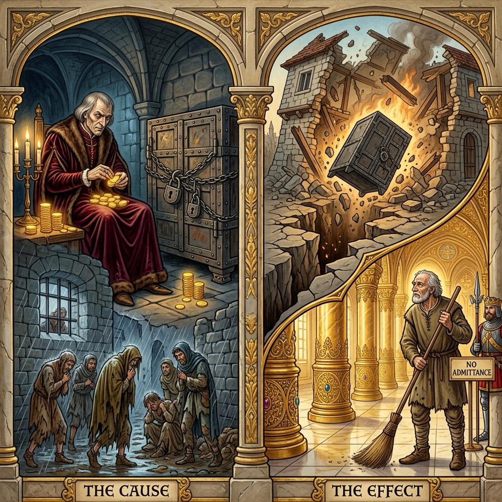
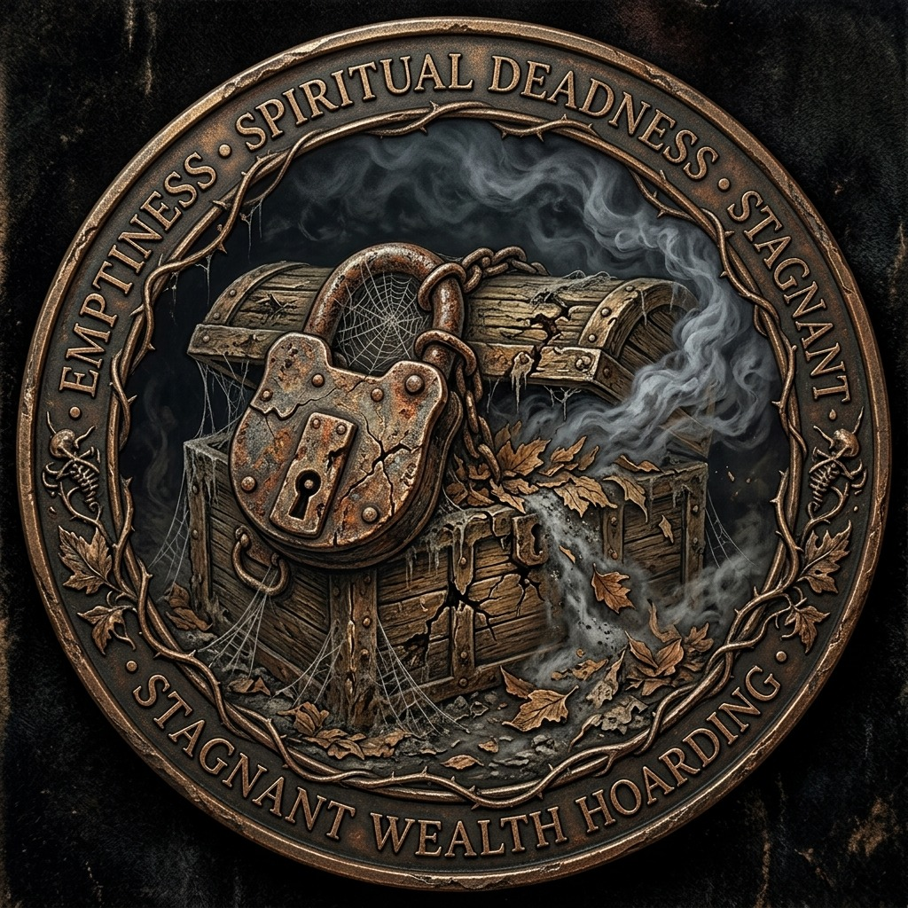
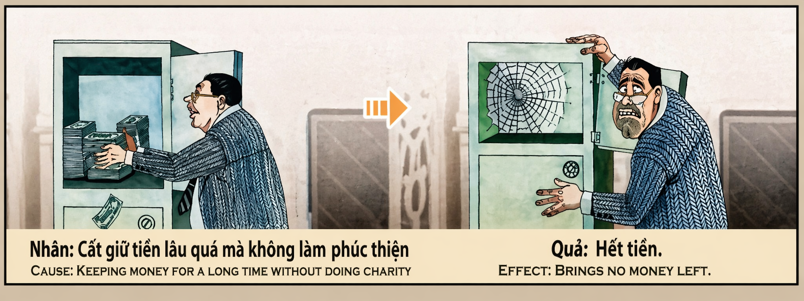

El Cofre del Vacío y la Riqueza Estancada The Empty Chest and Stagnant Wealth Lo scrigno del vuoto e della ricchezza stagnante 空虚的宝箱和停滞的财富 صدر الفراغ والثروات الراكدة Сундук пустоты и застоявшегося богатства Die Truhe der Leere und des stagnierenden Reichtums Le coffre du vide et de la richesse stagnante 空虚さと停滞した富の宝箱 O baú do vazio e da riqueza estagnada Chiếc Rương Hư Không Và Sự Giàu Có Trì Trệ
"Quien encadena la abundancia y represa el río de la vida, seca su propio manantial eterno; pues el oro que no alivia el llanto ajeno se convierte en plomo en el alma, y quien acumula en el egoísmo renacerá a las puertas del palacio ajeno, custodiando con manos pobres el tesoro que jamás podrá tocar." "He who chains abundance and dams the river of life dries up his own eternal spring; for the gold that does not relieve another's tears turns to lead in the soul, and he who hoards in selfishness shall be reborn at the gates of another's palace, guarding with poor hands the treasure he can never touch." "Chi incatena l'abbondanza e argina il fiume della vita secca la propria sorgente eterna; perché l'oro che non allevia le lacrime degli altri diventa piombo nell'anima, e chi accumula nell'egoismo rinascerà alle porte del palazzo di un altro, custodendo con povere mani il tesoro che non potrà mai toccare." “谁锁住了丰盛，筑坝了生命之河，谁就干涸了自己永恒的泉水；因为不能缓解别人眼泪的金子就会成为灵魂中的铅，谁自私地积累，就会在别人的宫殿门口重生，用可怜的双手守护着他永远无法触及的宝藏。” "من يقيد الوفرة ويسد نهر الحياة يجفف ينبوعه الأبدي؛ لأن الذهب الذي لا يخفف دموع الآخرين يصبح رصاصًا في الروح، ومن يتراكم في الأنانية سيولد من جديد على أبواب قصر غيره، ويحرس بأيدٍ فقيرة الكنز الذي لن يتمكن أبدًا من لمسه." «Кто сковывает изобилие и заграждает реку жизни, тот осушает свой вечный источник; ибо золото, не облегчающее слез других, становится свинцом в душе, а кто накапливает в себялюбии, тот возродится у дверей чужого дворца, охраняя бедными руками сокровище, к которому он никогда не сможет прикоснуться». „Wer den Überfluss fesselt und den Strom des Lebens staut, versiegt seine eigene ewige Quelle; denn das Gold, das die Tränen anderer nicht lindert, wird in der Seele zu Blei, und wer sich in Selbstsucht anhäuft, wird an den Türen des Palastes eines anderen wiedergeboren und mit armen Händen den Schatz bewachen, den er niemals berühren kann.“ "Celui qui enchaîne l'abondance et barre le fleuve de la vie tarit sa propre source éternelle ; car l'or qui ne soulage pas les larmes des autres devient du plomb dans l'âme, et celui qui accumule dans l'égoïsme renaîtra aux portes du palais d'autrui, gardant entre de pauvres mains le trésor qu'il ne pourra jamais toucher." 「豊かさを鎖にし、命の川をせき止める者は、自分自身の永遠の泉を枯らす。他人の涙を和らげない金は魂の中で鉛となり、利己主義で蓄える者は他人の宮殿の扉で生まれ変わり、決して触れることのできない宝を貧しい手で守るだろう。」 “Quem acorrenta a abundância e represa o rio da vida seca a sua própria fonte eterna; pois o ouro que não alivia as lágrimas dos outros torna-se chumbo na alma, e quem acumula no egoísmo renascerá às portas do palácio alheio, guardando com mãos pobres o tesouro que nunca poderá tocar.” "Kẻ xiềng xích sự sung túc và ngăn đập dòng sông của sự sống sẽ tự làm khô cạn suối nguồn vĩnh cửu của chính mình; bởi vàng không xoa dịu nước mắt người khác sẽ biến thành chì trong linh hồn, và kẻ tích trữ trong ích kỷ sẽ tái sinh trước cổng cung điện của người khác, canh giữ bằng đôi tay nghèo khó kho báu mà mình không bao giờ được chạm vào."
La abundancia es una corriente espiritual de agua viva, una energía sagrada otorgada por el cosmos para nutrir el jardín colectivo de la existencia. El dinero, las cosechas, los bienes materiales: todos son manifestaciones temporales de esta corriente universal cuyo propósito esencial es circular, fluyendo de mano en mano como la sangre fluye por las venas del cuerpo humano, alimentando cada célula, cada órgano, cada extremidad. Cuando un individuo acumula riquezas en un cofre cerrado sin permitir que fluyan —ni siquiera para aliviar el dolor del prójimo más cercano—, está construyendo una represa artificial en el cauce del río cósmico, estancando la corriente vital que debería irrigar los campos de la humanidad.
Este acto de estancamiento egoísta constituye una transgresión de extrema gravedad contra la ley del flujo universal. El avaro no roba directamente, pero comete un pecado igualmente devastador: retiene lo que el universo le entregó como canal de distribución, no como depósito final. Es como si un jardinero recibiera un manantial inagotable para regar cien jardines, pero construyera un muro de piedra alrededor del agua para contemplarla solo él, mientras los cien jardines se secan y mueren de sed a pocos metros de la abundancia. La responsabilidad kármica del avaro incluye cada flor que se marchitó, cada árbol que se secó, cada vida que pudo haber sido salvada con el agua que él acaparó.
El karma responde a esta obstrucción con una precisión geométrica devastadora: si el individuo construyó una represa, el cosmos la destruye. Las riquezas estancadas son arrebatadas por desgracias inevitables que actúan como terremotos del destino: robos, incendios, quiebras, fraudes de socios, enfermedades ruinosas o catástrofes naturales que devoran en horas lo que se acumuló durante décadas. El universo no castiga; simplemente libera la corriente bloqueada por la fuerza, porque el flujo de la vida no puede ser detenido indefinidamente. El avaro descubre con horror que el cofre más blindado es incapaz de resistir la fuerza del río cósmico cuando este decide reclamar lo que le pertenece.
En el plano físico de esta misma existencia, la obsesión por acumular seca el corazón del avaro de manera literal: su sistema cardiovascular, su capacidad de sentir empatía y su vitalidad emocional se deterioran progresivamente. El estrés de la vigilancia constante sobre sus tesoros genera cortisol tóxico que envejece prematuramente cada célula de su cuerpo. En la siguiente encarnación, este karma se amplifica en lo que las escrituras denominan «pobreza obsesiva»: el alma renace en condiciones de escasez material absoluta, pero con una fijación tortuosa e insaciable por la riqueza ajena, atrapada en el deseo desesperado de poseer lo que ve pero no puede tocar, incapaz de encontrar su verdadero Ikigai —su propósito vital— porque ha olvidado que el sentido de la abundancia no es poseerla, sino hacerla fluir.
Abundance is a spiritual current of living water, a sacred energy granted by the cosmos to nourish the collective garden of existence. Money, harvests, material goods: all are temporary manifestations of this universal current whose essential purpose is to circulate, flowing from hand to hand as blood flows through the veins of the human body, feeding every cell, every organ, every limb. When an individual hoards wealth in a locked chest without allowing it to flow—not even to relieve the suffering of their nearest neighbor—they are building an artificial dam across the course of the cosmic river, stagnating the vital current that should irrigate the fields of humanity.
This act of selfish stagnation constitutes a transgression of extreme gravity against the law of universal flow. The miser does not steal directly, but commits an equally devastating sin: they retain what the universe delivered to them as a channel of distribution, not as a final deposit. It is as if a gardener received an inexhaustible spring to water a hundred gardens, yet built a stone wall around the water to contemplate it alone, while the hundred gardens dried up and died of thirst just meters from abundance. The karmic responsibility of the miser includes every flower that withered, every tree that dried up, every life that could have been saved with the water they hoarded.
Karma responds to this obstruction with devastating geometric precision: if the individual built a dam, the cosmos destroys it. Stagnant wealth is seized by inevitable misfortunes that act as earthquakes of destiny: robberies, fires, bankruptcies, partner fraud, ruinous illnesses, or natural catastrophes that devour in hours what was accumulated over decades. The universe does not punish; it simply releases the blocked current by force, because the flow of life cannot be halted indefinitely. The miser discovers with horror that the most armored chest is incapable of resisting the force of the cosmic river when it decides to reclaim what belongs to it.
On the physical plane of this very existence, the obsession with hoarding dries the miser's heart in a literal sense: their cardiovascular system, their capacity for empathy, and their emotional vitality progressively deteriorate. The stress of constant vigilance over their treasures generates toxic cortisol that prematurely ages every cell of their body. In the next incarnation, this karma is amplified into what the scriptures call "obsessive poverty": the soul is reborn in conditions of absolute material scarcity, yet with a torturous and insatiable fixation on others' wealth, trapped in the desperate desire to possess what they see but cannot touch, unable to find their true Ikigai—their life purpose—because they have forgotten that the meaning of abundance is not to possess it, but to let it flow.
L'abbondanza è una corrente spirituale di acqua viva, un'energia sacra concessa dal cosmo per nutrire il giardino collettivo dell'esistenza. Denaro, raccolti, beni materiali: sono tutte manifestazioni temporanee di questa corrente universale il cui scopo essenziale è circolare, scorrendo di mano in mano come il sangue scorre nelle vene del corpo umano, nutrendo ogni cellula, ogni organo, ogni arto. Quando un individuo accumula ricchezza in uno scrigno chiuso senza lasciarla scorrere – nemmeno per alleviare il dolore del suo vicino più prossimo – sta costruendo una diga artificiale nel letto del fiume cosmico, facendo ristagnare la corrente vitale che dovrebbe irrigare i campi dell’umanità.
Questo atto di stagnazione egoistica costituisce una trasgressione estremamente grave contro la legge del flusso universale. L'avaro non ruba direttamente, ma commette un peccato altrettanto devastante: trattiene ciò che l'universo gli ha dato come canale di distribuzione, non come deposito finale. È come se un giardiniere ricevesse una sorgente inesauribile per irrigare cento giardini, ma costruisse un muro di pietra attorno all'acqua per contemplarla da solo, mentre i cento giardini seccano e muoiono di sete a pochi metri dall'abbondanza. La responsabilità karmica dell'avaro include ogni fiore che è appassito, ogni albero che è appassito, ogni vita che avrebbe potuto essere salvata con l'acqua che ha accumulato.
Il karma risponde a questo ostacolo con una precisione geometrica devastante: se l’individuo costruisce una diga, il cosmo la distrugge. La ricchezza stagnante viene portata via da inevitabili disgrazie che agiscono come terremoti del destino: furti, incendi, fallimenti, frodi partner, malattie rovinose o catastrofi naturali che divorano in poche ore ciò che è stato accumulato per decenni. L'universo non punisce; semplicemente rilascia la corrente bloccata con la forza, perché il flusso della vita non può essere fermato indefinitamente. L'avaro scopre con orrore che il forziere più corazzato è incapace di resistere alla forza del fiume cosmico quando decide di reclamare ciò che gli appartiene.
Sul piano fisico di questa stessa esistenza, l'ossessione di accumulare inaridisce letteralmente il cuore dell'avaro: il suo sistema cardiovascolare, la sua capacità di provare empatia e la sua vitalità emotiva si deteriorano progressivamente. Lo stress derivante dalla costante vigilanza sui tuoi tesori genera cortisolo tossico che invecchia prematuramente ogni cellula del tuo corpo. Nell'incarnazione successiva, questo karma si amplifica in quella che le scritture chiamano "povertà ossessiva": l'anima rinasce in condizioni di assoluta scarsità materiale, ma con una tortuosa e insaziabile fissazione sulla ricchezza altrui, intrappolata nel disperato desiderio di possedere ciò che vede ma non può toccare, incapace di trovare il suo vero Ikigai - il suo scopo vitale - perché ha dimenticato che il significato dell'abbondanza non è possederlo, ma farlo fluire.
丰富是活水的精神之流，是宇宙赋予的神圣能量，滋养着集体的存在花园。金钱、农作物、物质产品：所有这些都是这种普遍潮流的暂时表现，其根本目的是循环的，就像血液流经人体的静脉一样从一只手流向另一只手，滋养每一个细胞、每一个器官、每一个肢体。当一个人将财富积累在一个封闭的箱子里而不让它流动时——甚至不去减轻他最亲近的邻居的痛苦——他就是在宇宙河床上建造了一座人工水坝，停滞了本应灌溉人类田野的重要水流。
这种自私的停滞行为是对宇宙流动法则的极其严重的违背。守财奴并不直接偷窃，但他犯了同样具有毁灭性的罪恶：他保留了宇宙给他的东西作为分配渠道，而不是作为最终存款。就好像一个园丁得到了不竭的泉水，可以浇灌百花园，却在水周围筑起石墙独自沉思，而百花园却在距离丰富只有几米的地方干涸而死。守财奴的业力责任包括每一朵枯萎的花，每一棵枯萎的树，以及每一个可以用他囤积的水来拯救的生命。
业力以毁灭性的几何精度对这种障碍做出反应：如果个人建造了一座水坝，宇宙就会摧毁它。停滞的财富被不可避免的不幸夺走，这些不幸就像命运的地震一样：盗窃、火灾、破产、合伙人欺诈、毁灭性的疾病或自然灾害，在数小时内吞噬了数十年积累的财富。宇宙不惩罚；它只是释放强行阻断的电流，因为生命的流动不可能无限期地停止。当宇宙之河决定索取属于他的东西时，守财奴惊恐地发现，即使是最坚固的箱子也无法抵抗宇宙河流的力量。
在同一存在的物质层面上，对积累的痴迷实际上使守财奴的心枯竭：他的心血管系统、他的同理心能力以及他的情感活力逐渐恶化。对你的财宝持续保持警惕的压力会产生有毒的皮质醇，使你体内的每个细胞过早老化。在下一个转世中，这种业力在经典中所谓的“强迫性贫困”中被放大：灵魂在物质绝对匮乏的条件下重生，但却对他人的财富有着曲折且贪得无厌的执着，陷入了对拥有它所看到但无法触摸的东西的绝望欲望中，无法找到其真正的生命——它的重要目的——因为它忘记了丰富的意义不是拥有它，而是让它流动。
الوفرة هي تيار روحي للمياه الحية، وهي طاقة مقدسة يمنحها الكون لتغذية حديقة الوجود الجماعية. فالأموال والمحاصيل والسلع المادية: كلها مظاهر مؤقتة لهذا التيار العالمي الذي غرضه الأساسي دائري، ويتدفق من يد إلى يد كما يتدفق الدم في عروق الجسم البشري، ويغذي كل خلية، وكل عضو، وكل عضو. عندما يراكم الفرد الثروة في صندوق مغلق دون أن يسمح لها بالتدفق -ولا حتى لتخفيف آلام أقرب جيرانه- فهو يبني سدا اصطناعيا في قاع النهر الكوني، مما يؤدي إلى ركود التيار الحيوي الذي ينبغي أن يروي حقول الإنسانية.
إن هذا الركود الأناني يشكل انتهاكًا خطيرًا للغاية لقانون التدفق العالمي. البخيل لا يسرق بشكل مباشر، لكنه يرتكب خطيئة مدمرة بنفس القدر: فهو يحتفظ بما أعطاه إياه الكون كقناة توزيع، وليس كوديعة نهائية. وكأن البستاني تلقى نبعًا لا ينضب ليسقي مائة بستان، لكنه بنى جدارًا حجريًا حول الماء ليتأمله وحده، بينما تجف البساتين المائة وتموت عطشًا على بعد أمتار قليلة من الوفرة. تشمل مسؤولية الكارما البخيل كل زهرة ذبلت، وكل شجرة ذبلت، وكل حياة كان من الممكن إنقاذها بالمياه التي كان يخزنها.
تستجيب الكارما لهذا العائق بدقة هندسية مدمرة: إذا قام الفرد ببناء سد، فإن الكون يدمره. يتم اختطاف الثروات الراكدة من خلال مصائب حتمية تعمل مثل زلازل القدر: السرقات أو الحرائق أو الإفلاس أو احتيال الشركاء أو الأمراض المدمرة أو الكوارث الطبيعية التي تلتهم في ساعات ما تراكم على مدى عقود. الكون لا يعاقب؛ إنه ببساطة يطلق التيار المحظور بالقوة، لأن تدفق الحياة لا يمكن إيقافه إلى أجل غير مسمى. يكتشف البخيل لرعبه أن الصندوق الأكثر درعًا غير قادر على مقاومة قوة النهر الكوني عندما يقرر المطالبة بما يخصه.
على المستوى الجسدي لهذا الوجود نفسه، فإن هاجس التراكم يجفف قلب البخيل حرفيًا: نظام القلب والأوعية الدموية لديه، وقدرته على الشعور بالتعاطف، وحيويته العاطفية تتدهور تدريجيًا. إن الضغط الناتج عن اليقظة المستمرة على كنوزك يولد الكورتيزول السام الذي يؤدي إلى شيخوخة كل خلية في جسمك قبل الأوان. في التجسد التالي، يتم تضخيم هذه الكارما فيما يسميه الكتاب المقدس "الفقر المهووس": تولد الروح من جديد في ظروف الندرة المادية المطلقة، ولكن مع تثبيت متعرج ونهم على ثروة الآخرين، محاصرة في الرغبة اليائسة في امتلاك ما تراه ولكن لا تستطيع لمسه، غير قادرة على العثور على Ikigai الحقيقي - غرضها الحيوي - لأنها نسيت أن معنى الوفرة ليس امتلاكها، بل جعلها تتدفق.
Изобилие — это духовный поток живой воды, священная энергия, дарованная космосом для питания коллективного сада существования. Деньги, урожай, материальные блага: все это временные проявления этого универсального потока, основная цель которого круговая, перетекающего из рук в руки, как кровь течет по венам человеческого тела, питая каждую клетку, каждый орган, каждую конечность. Когда человек накапливает богатство в закрытом сундуке, не позволяя ему течь – даже для того, чтобы облегчить боль своего ближайшего соседа – он строит искусственную плотину в русле космической реки, застаивая жизненный поток, который должен орошать поля человечества.
Этот акт эгоистичного застоя представляет собой чрезвычайно серьёзное нарушение закона вселенского потока. Скупой не ворует напрямую, но совершает столь же разрушительный грех: он сохраняет то, что Вселенная дала ему, в качестве канала распределения, а не в качестве окончательного депозита. Это как если бы садовник получил неиссякаемый источник для орошения сотни садов, но построил вокруг воды каменную стену, чтобы созерцать ее в одиночестве, в то время как сто садов высыхают и умирают от жажды всего в нескольких метрах от изобилия. Кармическая ответственность скряги включает в себя каждый засохший цветок, каждое засохшее дерево, каждую жизнь, которую можно было спасти с помощью накопленной им воды.
Карма отвечает на это препятствие с разрушительной геометрической точностью: если человек построил плотину, космос разрушит ее. Застойное богатство расхищают неизбежные несчастья, которые действуют как землетрясения судьбы: кражи, пожары, банкротства, мошенничество партнеров, разрушительные болезни или природные катастрофы, пожирающие за часы то, что было накоплено десятилетиями. Вселенная не наказывает; оно просто высвобождает принудительно заблокированный ток, потому что поток жизни нельзя останавливать бесконечно. Скупой к своему ужасу обнаруживает, что самый бронированный сундук не способен противостоять силе космической реки, когда она решает заявить права на то, что принадлежит ему.
На физическом уровне того же существования одержимость накоплением буквально иссушает сердце скупца: его сердечно-сосудистая система, способность чувствовать сопереживание, эмоциональная жизнеспособность прогрессивно ухудшаются. Стресс от постоянной бдительности за своими сокровищами порождает токсичный кортизол, который преждевременно старит каждую клетку вашего тела. В следующем воплощении эта карма усиливается в том, что писания называют «навязчивой бедностью»: душа перерождается в условиях абсолютной материальной нехватки, но с мучительной и ненасытной фиксацией на богатстве других, пойманная в ловушку отчаянного желания обладать тем, что она видит, но не может коснуться, неспособная найти свой истинный Икигай – свою жизненную цель – потому что она забыла, что смысл изобилия заключается не в обладании им, а в том, чтобы заставить его течь.
Fülle ist ein spiritueller Strom lebendigen Wassers, eine heilige Energie, die vom Kosmos verliehen wird, um den kollektiven Garten der Existenz zu nähren. Geld, Ernten, materielle Güter: Sie alle sind vorübergehende Manifestationen dieses universellen Stroms, dessen wesentliches Ziel ein Kreislauf ist, der von Hand zu Hand fließt, so wie Blut durch die Adern des menschlichen Körpers fließt und jede Zelle, jedes Organ, jedes Glied nährt. Wenn ein Mensch Reichtum in einer verschlossenen Truhe anhäuft, ohne ihn fließen zu lassen – nicht einmal, um den Schmerz seines nächsten Nachbarn zu lindern –, baut er einen künstlichen Damm im Bett des kosmischen Flusses und stagniert damit den lebenswichtigen Strom, der die Felder der Menschheit bewässern sollte.
Dieser Akt selbstsüchtiger Stagnation stellt einen äußerst schwerwiegenden Verstoß gegen das Gesetz des universellen Flusses dar. Der Geizhals stiehlt nicht direkt, aber er begeht eine ebenso verheerende Sünde: Er behält das, was ihm das Universum gegeben hat, als Vertriebskanal, nicht als endgültige Hinterlegung. Es ist, als ob ein Gärtner eine unerschöpfliche Quelle erhält, um hundert Gärten zu bewässern, aber eine Steinmauer um das Wasser baut, um es allein zu betrachten, während die hundert Gärten nur wenige Meter vor der Fülle vertrocknen und verdursten. Die karmische Verantwortung des Geizhalses umfasst jede verdorrte Blume, jeden verdorrten Baum, jedes Leben, das mit dem gehorteten Wasser hätte gerettet werden können.
Karma reagiert auf dieses Hindernis mit verheerender geometrischer Präzision: Wenn der Einzelne einen Damm baut, zerstört der Kosmos ihn. Stagnierendes Vermögen wird durch unvermeidliche Unglücke weggerissen, die wie Erdbeben des Schicksals wirken: Diebstähle, Brände, Insolvenzen, Partnerbetrug, verheerende Krankheiten oder Naturkatastrophen, die innerhalb von Stunden das verschlingen, was über Jahrzehnte angesammelt wurde. Das Universum bestraft nicht; Es gibt lediglich den gewaltsam blockierten Strom frei, da der Fluss des Lebens nicht auf unbestimmte Zeit gestoppt werden kann. Der Geizhals stellt zu seinem Entsetzen fest, dass die am stärksten gepanzerte Truhe nicht in der Lage ist, der Kraft des kosmischen Flusses zu widerstehen, als sie beschließt, das zu beanspruchen, was ihm gehört.
Auf der physischen Ebene dieser Existenz trocknet der Akkumulationswahn das Herz des Geizhalses buchstäblich aus: Sein Herz-Kreislauf-System, seine Fähigkeit, Mitgefühl zu empfinden, und seine emotionale Vitalität verschlechtern sich zunehmend. Der Stress der ständigen Wachsamkeit gegenüber Ihren Schätzen erzeugt giftiges Cortisol, das jede Zelle in Ihrem Körper vorzeitig altern lässt. In der nächsten Inkarnation verstärkt sich dieses Karma zu dem, was die Schriften „zwanghafte Armut“ nennen: Die Seele wird unter Bedingungen absoluter materieller Knappheit wiedergeboren, aber mit einer gewundenen und unersättlichen Fixierung auf den Reichtum anderer, gefangen in dem verzweifelten Wunsch, das zu besitzen, was sie sieht, aber nicht berühren kann, unfähig, ihr wahres Ikigai – ihren Lebenszweck – zu finden, weil sie vergessen hat, dass die Bedeutung des Überflusses nicht darin besteht, ihn zu besitzen, sondern ihn zum Fließen zu bringen.
L'abondance est un courant spirituel d'eau vive, une énergie sacrée accordée par le cosmos pour nourrir le jardin collectif de l'existence. Argent, récoltes, biens matériels : tous sont des manifestations temporaires de ce courant universel dont le but essentiel est circulaire, coulant de main en main comme le sang coule dans les veines du corps humain, nourrissant chaque cellule, chaque organe, chaque membre. Lorsqu’un individu accumule des richesses dans un coffre fermé sans les laisser couler – même pour atténuer la douleur de son plus proche voisin – il construit un barrage artificiel dans le lit du fleuve cosmique, faisant stagner le courant vital qui devrait irriguer les champs de l’humanité.
Cet acte de stagnation égoïste constitue une transgression extrêmement grave contre la loi du flux universel. L'avare ne vole pas directement, mais il commet un péché tout aussi dévastateur : il conserve ce que l'univers lui a donné comme canal de distribution et non comme dépôt final. C'est comme si un jardinier recevait une source inépuisable pour arroser cent jardins, mais construisait un mur de pierre autour de l'eau pour la contempler seul, tandis que les cent jardins s'assèchent et meurent de soif à quelques mètres seulement de l'abondance. La responsabilité karmique de l'avare inclut chaque fleur fanée, chaque arbre fané, chaque vie qui aurait pu être sauvée grâce à l'eau qu'il a accumulée.
Le karma répond à cette obstruction avec une précision géométrique dévastatrice : si l’individu construit un barrage, le cosmos le détruit. Les richesses stagnantes sont arrachées par des malheurs inévitables qui agissent comme des tremblements de terre du destin : vols, incendies, faillites, fraudes conjugales, maladies ruineuses ou catastrophes naturelles qui dévorent en quelques heures ce qui a été accumulé pendant des décennies. L'univers ne punit pas ; il libère simplement le courant bloqué de force, car le flux de la vie ne peut être arrêté indéfiniment. L'avare découvre avec horreur que le coffre le plus blindé est incapable de résister à la force du fleuve cosmique lorsqu'il décide de réclamer ce qui lui appartient.
Sur le plan physique de cette même existence, l'obsession d'accumuler assèche littéralement le cœur de l'avare : son système cardiovasculaire, sa capacité d'empathie et sa vitalité émotionnelle se détériorent progressivement. Le stress d’une vigilance constante sur vos trésors génère du cortisol toxique qui fait vieillir prématurément chaque cellule de votre corps. Dans l'incarnation suivante, ce karma est amplifié dans ce que les Écritures appellent « pauvreté obsessionnelle » : l'âme renaît dans des conditions de pénurie matérielle absolue, mais avec une fixation tortueuse et insatiable sur la richesse des autres, piégée dans le désir désespéré de posséder ce qu'elle voit mais ne peut pas toucher, incapable de trouver son véritable Ikigai - son but vital - parce qu'elle a oublié que le sens de l'abondance n'est pas de le posséder, mais de le faire couler.
豊かさは生きた水のスピリチュアルな流れであり、集合的な存在の庭を養うために宇宙から与えられた神聖なエネルギーです。お金、農作物、物品などはすべて、この普遍的な流れの一時的な現れであり、その本質的な目的は循環することであり、血液が人体の静脈を流れるように手から手へ流れ、すべての細胞、すべての器官、すべての四肢に栄養を与えます。ある個人が、最も近い隣人の痛みを和らげるためでさえ、それを流すことを許さずに閉じた箱の中に富を蓄積するとき、その人は宇宙の川の底に人工のダムを建設し、人類の領域に灌漑すべき重要な流れを停滞させていることになります。
この利己的な停滞の行為は、宇宙の流れの法則に対する極めて重大な違反となります。守銭奴は直接盗みをするわけではないが、同様に壊滅的な罪を犯している。彼は宇宙から与えられたものを、最終的な預金としてではなく、流通経路として保持しているのだ。それはあたかも庭師が百の庭園に水を供給する無尽蔵の泉を受け取ったが、その水の周りに石の壁を築き一人でそれを熟考する一方で、百の庭園は豊かさからほんの数メートル離れたところで枯れてしまい、渇きで死んでしまうようなものである。守銭奴のカルマ的責任には、枯れたすべての花、枯れたすべての木、彼がため込んだ水で救われたかもしれないすべての命が含まれます。
カルマはこの障害に壊滅的な幾何学的精度で反応します。個人がダムを建設した場合、宇宙はそれを破壊します。停滞した富は、運命の地震のような避けられない不幸によって奪われます。盗難、火災、破産、パートナー詐欺、破滅的な病気、または何十年にもわたって蓄積されたものを数時間で食い荒らす自然災害などです。宇宙は罰を与えません。生命の流れを永久に止めることはできないため、強制的に遮断された電流を解放するだけです。守銭奴は、自分のものを手に入れようとする宇宙の川の力に、最も鎧を着た箱では抵抗できないことに恐怖を感じます。
この同じ存在の物理的レベルでは、お金を貯めることへの強迫観念が文字通り守銭奴の心を枯渇させます。心臓血管系、共感を感じる能力、そして感情的な活力が徐々に低下していきます。自分の宝物を常に警戒するストレスは、体内のすべての細胞を早期に老化させる有毒なコルチゾールを生成します。次の転生では、このカルマは経典で「強迫的貧困」と呼ばれるもので増幅されます。つまり、魂は絶対的な物質的欠乏の状況で生まれ変わりますが、他人の富に曲がりくねった飽くなき執着を持ち、目に見えるものを所有したいという絶望的な欲望に囚われていますが、触れることはできず、真の生きがい、つまりその重要な目的を見つけることができません。なぜなら、豊かさの意味はそれを所有することではなく、それを流れさせることであることを忘れているからです。
Abundância é uma corrente espiritual de água viva, uma energia sagrada concedida pelo cosmos para nutrir o jardim coletivo da existência. Dinheiro, colheitas, bens materiais: todos são manifestações temporárias desta corrente universal cujo propósito essencial é circular, fluindo de mão em mão enquanto o sangue flui pelas veias do corpo humano, nutrindo cada célula, cada órgão, cada membro. Quando um indivíduo acumula riquezas num baú fechado sem deixá-las fluir – nem mesmo para aliviar a dor do próximo mais próximo – está construindo uma represa artificial no leito do rio cósmico, estagnando a corrente vital que deveria irrigar os campos da humanidade.
Este ato de estagnação egoísta constitui uma transgressão gravíssima contra a lei do fluxo universal. O avarento não rouba diretamente, mas comete um pecado igualmente devastador: retém o que o universo lhe deu como canal de distribuição, não como depósito final. É como se um jardineiro recebesse uma fonte inesgotável para regar cem jardins, mas construísse um muro de pedra ao redor da água para contemplá-la sozinho, enquanto os cem jardins secam e morrem de sede a poucos metros da abundância. A responsabilidade cármica do avarento inclui cada flor que murchou, cada árvore que murchou, cada vida que poderia ter sido salva com a água que ele acumulou.
O Karma responde a esta obstrução com uma precisão geométrica devastadora: se o indivíduo constrói uma barragem, o cosmos a destrói. A riqueza estagnada é arrancada por infortúnios inevitáveis que agem como terremotos do destino: roubos, incêndios, falências, fraudes de parceiros, doenças ruinosas ou catástrofes naturais que devoram em horas o que foi acumulado durante décadas. O universo não pune; simplesmente libera a corrente bloqueada à força, porque o fluxo da vida não pode ser interrompido indefinidamente. O avarento descobre, para seu horror, que o baú mais blindado é incapaz de resistir à força do rio cósmico quando este decide reivindicar o que lhe pertence.
No nível físico desta mesma existência, a obsessão de acumular literalmente seca o coração do avarento: seu sistema cardiovascular, sua capacidade de sentir empatia e sua vitalidade emocional deterioram-se progressivamente. O estresse da vigilância constante sobre seus tesouros gera cortisol tóxico que envelhece prematuramente todas as células do seu corpo. Na encarnação seguinte, esse carma é amplificado no que as escrituras chamam de “pobreza obsessiva”: a alma renasce em condições de absoluta escassez material, mas com uma fixação tortuosa e insaciável na riqueza dos outros, presa no desejo desesperado de possuir o que vê, mas não pode tocar, incapaz de encontrar seu verdadeiro Ikigai – seu propósito vital – porque esqueceu que o significado da abundância não é possuí-la, mas fazê-la fluir.
Sự sung túc là một dòng chảy tâm linh của nước sống, một nguồn năng lượng thiêng liêng được vũ trụ ban tặng để nuôi dưỡng khu vườn tập thể của sự tồn tại. Tiền bạc, mùa màng, của cải vật chất: tất cả đều là những biểu hiện tạm thời của dòng chảy vũ trụ này, mà mục đích thiết yếu của nó là tuần hoàn, chảy từ tay này sang tay khác như máu chảy trong huyết mạch cơ thể con người, nuôi dưỡng từng tế bào, từng cơ quan, từng chi thể. Khi một cá nhân tích trữ của cải trong chiếc rương khóa kín mà không cho phép nó lưu thông — thậm chí không để xoa dịu nỗi đau của người thân cận nhất — họ đang xây dựng một con đập nhân tạo ngang dòng sông vũ trụ, làm trì trệ dòng chảy sinh mệnh vốn phải tưới tiêu cho cánh đồng nhân loại.
Hành động trì trệ ích kỷ này cấu thành một sự phạm tội cực kỳ nghiêm trọng chống lại quy luật lưu thông vũ trụ. Kẻ keo kiệt không trực tiếp ăn cắp, nhưng phạm phải một tội lỗi tàn khốc ngang bằng: họ giữ lại thứ mà vũ trụ giao cho họ với tư cách là kênh phân phối, chứ không phải kho chứa cuối cùng. Giống như một người làm vườn nhận được suối nguồn bất tận để tưới cho trăm khu vườn, nhưng lại xây bức tường đá bao quanh dòng nước để chỉ mình mình chiêm ngưỡng, trong khi trăm khu vườn kia héo khô và chết khát chỉ cách nguồn nước vài bước chân. Trách nhiệm nghiệp quả của kẻ keo kiệt bao gồm từng bông hoa đã héo tàn, từng cái cây đã khô chết, từng sinh mệnh đáng lẽ được cứu sống bằng nguồn nước mà họ chiếm giữ.
Nghiệp quả phản hồi sự cản trở này với độ chính xác hình học tàn khốc: nếu cá nhân xây đập, vũ trụ sẽ phá hủy nó. Của cải trì trệ bị tước đoạt bởi những tai ương không thể tránh khỏi, hoạt động như những trận động đất của số phận: trộm cướp, hỏa hoạn, phá sản, lừa đảo của đối tác, bệnh tật tàn phá hoặc thiên tai nuốt chửng trong vài giờ những gì đã tích lũy suốt hàng thập kỷ. Vũ trụ không trừng phạt; nó chỉ đơn giản giải phóng dòng chảy bị chặn bằng sức mạnh, bởi dòng chảy của sự sống không thể bị ngăn chặn vĩnh viễn. Kẻ keo kiệt phát hiện trong kinh hoàng rằng chiếc rương bọc thép kiên cố nhất cũng không thể chống lại sức mạnh của dòng sông vũ trụ khi nó quyết định đòi lại thứ thuộc về mình.
Trên bình diện vật lý của chính kiếp sống này, nỗi ám ảnh tích trữ làm khô cạn trái tim kẻ keo kiệt theo nghĩa đen: hệ tim mạch, khả năng đồng cảm và sức sống cảm xúc của họ suy thoái dần dần. Căng thẳng từ việc canh gác kho báu liên tục sinh ra cortisol độc hại khiến mỗi tế bào trong cơ thể lão hóa sớm. Trong kiếp sống tiếp theo, nghiệp quả này được khuếch đại thành cái mà kinh điển gọi là «nghèo khổ ám ảnh»: linh hồn tái sinh trong điều kiện thiếu thốn vật chất tuyệt đối, nhưng với một nỗi ám ảnh dày vò và không thể thỏa mãn về của cải của người khác, bị mắc kẹt trong khao khát tuyệt vọng muốn sở hữu thứ mình nhìn thấy nhưng không thể chạm vào, bất lực trong việc tìm kiếm Ikigai thực sự — mục đích sống đích thực — bởi họ đã quên rằng ý nghĩa của sự sung túc không phải là chiếm hữu, mà là để nó lưu chuyển.
El Banquero de Hierro y la Herencia del Viento
The Iron Banker and the Inheritance of the Wind
Il banchiere di ferro e l'eredità del vento
铁银行家与风的遗产
المصرفي الحديدي وتراث الريح
Железный банкир и наследие ветра
Der eiserne Bankier und das Erbe des Windes
Le banquier de fer et l'héritage du vent
アイアンバンカーと風の遺産
O Banqueiro de Ferro e a Herança do Vento
Gã Chủ Ngân Hàng Sắt Và Gia Tài Của Gió
En la próspera ciudad de Oakhaven, enclavada entre colinas de robles centenarios y ríos cristalinos, vivía Nathan, un contable y prestamista de habilidad extraordinaria. Sus libros de cuentas eran impecables, su mente para los números era prodigiosa, y su reputación como gestor financiero no tenía igual en toda la comarca. Sin embargo, Nathan había desviado su talento hacia una obsesión ciega y destructiva: la acumulación de metal. Cada moneda que entraba en sus manos quedaba prisionera para siempre en un gigantesco cofre de hierro blindado con siete candados, escondido en un sótano subterráneo de piedra fría debajo de su mansión. Silas, un tejedor anciano de manos arrugadas y alma luminosa que pasaba sus días fabricando ropas gratuitas para los huérfanos del valle y enseñando el arte del telar a jóvenes sin recursos, visitó a Nathan una tarde de otoño. Con la voz suave del que ha encontrado su propósito de vida, le advirtió: «Nathan, el oro es como el agua del cielo. Si la guardas en un estanque cerrado, se pudre y cría gusanos. Si la dejas correr, riega los campos y alimenta bocas. Tu propósito no es custodiar el hierro, sino encender la vida.»
Nathan escuchó las palabras del viejo tejedor con una sonrisa helada y lo despidió sin ofrecerle ni un vaso de agua. En los meses siguientes, su avaricia se intensificó hasta alcanzar dimensiones monstruosas. Cobró intereses implacables a las viudas del valle, duplicando y triplicando las deudas de familias que apenas podían alimentar a sus hijos. Cuando su propia madre anciana, Rebeca, le suplicó entre lágrimas que reparara el techo de su casa derrumbada por la lluvia, Nathan la miró con ojos de piedra y le respondió: «Cada moneda que gaste en tu techo es una moneda menos en mi cofre. Búscate un refugio bajo un puente.» La anciana Rebeca, temblando de frío y de vergüenza, se arrastró hacia el granero abandonado de un vecino compasivo, donde pasó sus últimos inviernos durmiendo sobre paja húmeda. Nathan, mientras tanto, descendía cada noche a su sótano blindado, encendía una sola vela temblorosa, y contaba sus monedas de oro una por una con dedos febriles, acariciando cada pieza como si fuera un hijo, temblando ante la idea de perder una sola pizca de cobre.
Una noche de tormenta violenta, cuando los relámpagos rasgaban el cielo y el viento aullaba como un lobo herido, la tierra comenzó a temblar. Un terremoto sacudió Oakhaven con una furia que los ancianos jamás habían presenciado. Las calles se agrietaron, los muros se desplomaron, y una inmensa fisura subterránea se abrió directamente debajo del sótano de Nathan. El gigantesco cofre de hierro blindado, con todas sus monedas de oro, se desplomó en la fosa oscura como una piedra lanzada a un pozo sin fondo, tragado por las entrañas hambrientas de la tierra. Nathan, que dormía arriba, despertó al sentir que el suelo cedía bajo sus pies. Bajó corriendo las escaleras del sótano, pero solo encontró un abismo negro y humeante donde antes estaba su tesoro. Una chispa eléctrica del terremoto encendió simultáneamente todos los pagarés y libros de cuentas que Nathan guardaba en su escritorio, reduciéndolos a cenizas en minutos. En una sola noche, Nathan perdió absolutamente todo: cada moneda, cada deuda a su favor, cada documento que probaba su riqueza. La ciudad, devastada por el terremoto, no tuvo compasión por él.
Pobre, viejo y completamente arruinado, Nathan vagó por las calles destruidas de Oakhaven como un fantasma. Los mismos campesinos a quienes había exprimido sin piedad le cerraban las puertas en la cara. Nadie le ofrecía pan ni refugio. Durante los meses siguientes, Nathan mendigó en las esquinas, durmiendo bajo puentes —exactamente como había condenado a su propia madre—, y cada noche, bajo las estrellas indiferentes, lloraba comprendiendo con una claridad devastadora que su vida entera no había tenido ningún propósito real. No había construido nada, no había salvado a nadie, no había dejado huella alguna de amor en el mundo. Su Ikigai —su razón de existir— había sido enterrado bajo el peso muerto del oro inútil. Una noche helada de enero, Nathan murió solo, abrazado a una piedra yerma del camino, con los ojos abiertos mirando al cielo vacío, llevándose consigo solo el eco de las monedas que ya no existían.
La muerte no canceló la deuda kármica de Nathan. En su siguiente encarnación, renació como Jamil, un niño humilde en un pueblo polvoriento a las puertas de un suntuoso palacio imperial adornado de oro y piedras preciosas. Desde su más tierna infancia, Jamil mostró una extraña fijación obsesiva por los metales preciosos: podía pasar horas hipnotizado contemplando el brillo de una moneda de cobre, sintiendo una atracción magnética e inexplicable hacia cualquier objeto dorado. Al cumplir doce años, fue asignado como barrendero del palacio imperial. Cada mañana, Jamil recorría los interminables pasillos de mármol y oro con su escoba rústica de mimbre, puliendo con devoción religiosa los marcos dorados de las puertas, los jarrones enjoyados, los pilares de oro macizo. Sentía una fascinación hipnótica al tocar el metal con su trapo húmedo, y una añoranza desgarradora por poseerlo, como si en algún lugar profundo de su memoria existiera el recuerdo borroso de un cofre perdido. Pero su humilde casta le prohibía estrictamente llevarse cualquier objeto del palacio; los guardias lo vigilaban con ojos de halcón, y la menor sospecha significaba azotes y destierro. Jamil pasaba las noches llorando en su catre de paja, sintiendo el vacío insondable de una vida dedicada a contemplar la belleza del oro ajeno sin poder tocarlo jamás. Hasta que un amanecer, mientras barría la entrada del palacio, encontró un perro famélico y tembloroso acurrucado bajo las escalinatas de mármol. Sin pensarlo, Jamil partió en dos su único trozo de pan negro y se lo ofreció al animal con manos temblorosas. El perro lamió su mano con gratitud infinita, y en ese instante, por primera vez en su vida, Jamil sintió que algo cálido se encendía en su pecho: una chispa diminuta de propósito, una gota de agua viva en el desierto de su alma. Comprendió, con lágrimas silenciosas rodando por sus mejillas polvorientas, que la verdadera riqueza nunca estuvo en el cofre de hierro que su alma recordaba vagamente, sino en el acto invisible y humilde de compartir el pan con quien tiene hambre.
In the prosperous town of Oakhaven, nestled between hills of ancient oaks and crystalline rivers, there lived Nathan, an accountant and moneylender of extraordinary skill. His ledgers were impeccable, his mind for numbers was prodigious, and his reputation as a financial manager had no equal throughout the region. Yet Nathan had diverted his talent toward a blind and destructive obsession: the accumulation of metal. Every coin that entered his hands became a prisoner forever in a gigantic iron chest reinforced with seven padlocks, hidden in a cold stone cellar beneath his mansion. Silas, an elderly weaver with wrinkled hands and a luminous soul who spent his days making free clothes for the orphans of the valley and teaching the art of weaving to young people without means, visited Nathan one autumn afternoon. With the gentle voice of one who has found his life's purpose, he warned him: 'Nathan, gold is like water from the sky. If you keep it in a closed pond, it rots and breeds worms. If you let it run, it irrigates the fields and feeds mouths. Your purpose is not to guard iron, but to ignite life.'
Nathan listened to the old weaver's words with an icy smile and dismissed him without offering even a glass of water. In the months that followed, his greed intensified until it reached monstrous dimensions. He charged merciless interest rates to the widows of the valley, doubling and tripling the debts of families who could barely feed their children. When his own elderly mother, Rebecca, tearfully begged him to repair the roof of her house, which had collapsed under the rain, Nathan looked at her with stone eyes and replied: 'Every coin I spend on your roof is one coin less in my chest. Find yourself shelter under a bridge.' The elderly Rebecca, trembling with cold and shame, dragged herself to the abandoned barn of a compassionate neighbor, where she spent her final winters sleeping on damp straw. Nathan, meanwhile, descended to his armored cellar each night, lit a single trembling candle, and counted his gold coins one by one with feverish fingers, caressing each piece as if it were a child, trembling at the thought of losing a single speck of copper.
One night of violent storm, when lightning tore the sky and the wind howled like a wounded wolf, the earth began to tremble. An earthquake shook Oakhaven with a fury the elders had never witnessed. Streets cracked, walls collapsed, and an immense underground fissure opened directly beneath Nathan's cellar. The gigantic armored iron chest, with all its gold coins, plunged into the dark pit like a stone cast into a bottomless well, swallowed by the hungry bowels of the earth. Nathan, who was sleeping upstairs, awoke feeling the ground give way beneath his feet. He ran down the cellar stairs, but found only a black, smoking abyss where his treasure had once been. An electrical spark from the earthquake simultaneously ignited all the promissory notes and ledgers Nathan kept at his desk, reducing them to ashes within minutes. In a single night, Nathan lost absolutely everything: every coin, every debt in his favor, every document that proved his wealth. The city, devastated by the earthquake, had no compassion for him.
Poor, old, and completely ruined, Nathan wandered the destroyed streets of Oakhaven like a ghost. The same peasants he had squeezed without mercy slammed their doors in his face. No one offered him bread or shelter. During the following months, Nathan begged on street corners, sleeping under bridges—exactly as he had condemned his own mother to do—and every night, under the indifferent stars, he wept, understanding with devastating clarity that his entire life had had no real purpose. He had built nothing, saved no one, left no trace of love in the world. His Ikigai—his reason for existing—had been buried under the dead weight of useless gold. One freezing January night, Nathan died alone, embracing a barren roadside stone, his eyes open gazing at the empty sky, taking with him only the echo of coins that no longer existed.
Death did not cancel Nathan's karmic debt. In his next incarnation, he was reborn as Jamil, a humble child in a dusty village at the gates of a sumptuous imperial palace adorned with gold and precious stones. From his earliest childhood, Jamil displayed a strange obsessive fixation with precious metals: he could spend hours hypnotized contemplating the gleam of a copper coin, feeling a magnetic and inexplicable attraction to any golden object. At twelve years of age, he was assigned as a sweeper in the imperial palace. Every morning, Jamil walked the endless corridors of marble and gold with his rustic wicker broom, devotedly polishing the gilded door frames, the jeweled vases, the solid gold pillars. He felt a hypnotic fascination when touching the metal with his damp cloth, and a heartbreaking longing to possess it, as though somewhere deep in his memory there existed the blurred recollection of a lost chest. But his humble caste strictly forbade him from taking any object from the palace; the guards watched him with hawk eyes, and the slightest suspicion meant flogging and exile. Jamil spent his nights weeping on his straw cot, feeling the unfathomable void of a life devoted to contemplating the beauty of another's gold without ever being able to touch it. Until one dawn, while sweeping the palace entrance, he found a starving, trembling dog huddled beneath the marble staircase. Without thinking, Jamil broke his only piece of black bread in two and offered it to the animal with trembling hands. The dog licked his hand with infinite gratitude, and in that instant, for the first time in his life, Jamil felt something warm ignite in his chest: a tiny spark of purpose, a drop of living water in the desert of his soul. He understood, with silent tears rolling down his dusty cheeks, that true wealth had never been in the iron chest his soul vaguely remembered, but in the invisible and humble act of sharing bread with the one who hungers.
Nella prospera cittadina di Oakhaven, incastonata tra colline di querce secolari e fiumi cristallini, viveva Nathan, contabile e usuraio di straordinaria abilità. I suoi libri contabili erano impeccabili, la sua mente per i numeri era prodigiosa e la sua reputazione di manager finanziario non aveva eguali in tutta la regione. Nathan però aveva dirottato i suoi talenti verso un'ossessione cieca e distruttiva: l'accumulo di metallo. Ogni moneta che entrava nelle sue mani veniva imprigionata per sempre in una gigantesca cassa di ferro corazzata con sette lucchetti, nascosta in un freddo seminterrato sotterraneo di pietra sotto la sua villa. Silas, un anziano tessitore dalle mani rugose e dall'animo luminoso che trascorreva le sue giornate confezionando abiti gratuiti per gli orfani della valle e insegnando l'arte del telaio ai giovani poveri, fece visita a Nathan un pomeriggio d'autunno. Con la voce dolce di chi ha trovato lo scopo della vita, lo avverte: «Nathan, l'oro è come l'acqua del cielo. Se lo tieni in uno stagno chiuso, marcisce e genera vermi. Se lo lasci correre, irriga i campi e nutre le bocche. Il tuo scopo non è custodire il ferro, ma accendere la vita.
Nathan ascoltò le parole del vecchio tessitore con un sorriso gelido e lo congedò senza offrirgli nemmeno un bicchiere d'acqua. Nei mesi successivi, la sua avidità si intensificò fino a raggiungere proporzioni mostruose. Faceva pagare interessi incessanti alle vedove della valle, raddoppiando e triplicando i debiti delle famiglie che riuscivano a malapena a nutrire i propri figli. Quando la sua anziana madre, Rebecca, lo pregò in lacrime di riparare il tetto della loro casa crollata dalla pioggia, Nathan la guardò con occhi di pietra e rispose: "Ogni moneta che spendo sul tuo tetto è una moneta in meno nel mio forziere. Trova riparo sotto un ponte. La vecchia Rebecca, tremando di freddo e di vergogna, strisciò verso la stalla abbandonata di un vicino compassionevole, dove trascorse i suoi ultimi inverni dormendo sulla paglia umida. Nathan, nel frattempo, scendeva ogni notte nella sua cantina blindata, accendeva una sola lampada tremante. candela, e contava una per una le sue monete d'oro con dita febbrili, accarezzando ogni pezzo come se fosse un bambino, tremando al pensiero di perdere anche un solo pezzo di rame.
Una notte violentemente tempestosa, quando i fulmini squarciarono il cielo e il vento ululò come un lupo ferito, la terra cominciò a tremare. Un terremoto scosse Oakhaven con una furia a cui gli anziani non avevano mai assistito. Le strade si spaccarono, i muri crollarono e un'enorme fessura sotterranea si aprì direttamente sotto il seminterrato di Nathan. La gigantesca cassa di ferro corazzata, con tutte le sue monete d'oro, crollò nell'oscuro pozzo come un sasso gettato in un pozzo senza fondo, inghiottito dalle viscere affamate della terra. Nathan, che dormiva al piano di sopra, si svegliò quando sentì il pavimento cedere sotto i suoi piedi. Corse giù per le scale del seminterrato, ma trovò solo un abisso nero e fumante dove prima si trovava il suo tesoro. Una scintilla elettrica causata dal terremoto ha acceso contemporaneamente tutte le cambiali e i libri contabili che Nathan teneva sulla sua scrivania, riducendoli in cenere in pochi minuti. In una sola notte, Nathan perse assolutamente tutto: ogni moneta, ogni debito a suo favore, ogni documento che dimostrasse la sua ricchezza. La città, devastata dal terremoto, non ebbe compassione di lui.
Povero, vecchio e completamente in rovina, Nathan vagava per le strade distrutte di Oakhaven come un fantasma. Gli stessi contadini che aveva spremuto senza pietà gli hanno chiuso le porte in faccia. Nessuno gli offrì né pane né riparo. Nei mesi successivi, Nathan pregò agli angoli delle strade, dormendo sotto i ponti – esattamente come aveva condannato sua madre – e ogni notte, sotto le stelle indifferenti, pianse, rendendosi conto con devastante chiarezza che tutta la sua vita non era servita a nulla. Non aveva costruito nulla, non aveva salvato nessuno, non aveva lasciato alcuna traccia d'amore nel mondo. Il suo Ikigai, la sua ragione di esistere, era stato sepolto sotto il peso morto dell'oro inutile. Una gelida notte di gennaio, Nathan morì solo, abbracciato a una pietra brulla sulla strada, con gli occhi aperti fissi al cielo vuoto, portando con sé solo l'eco delle monete che non esistevano più.
La morte non ha cancellato il debito karmico di Nathan. Nella sua successiva incarnazione, rinacque come Jamil, un umile ragazzo in una città polverosa alle porte di un sontuoso palazzo imperiale adornato con oro e pietre preziose. Fin dalla prima infanzia, Jamil mostrò una strana fissazione ossessiva per i metalli preziosi: poteva passare ore ipnotizzato contemplando lo splendore di una moneta di rame, provando un'attrazione magnetica e inspiegabile verso qualsiasi oggetto d'oro. Quando compì dodici anni, gli fu assegnato il ruolo di spazzino per il palazzo imperiale. Ogni mattina, Jamil percorreva gli infiniti corridoi di marmo e oro con la sua rustica scopa di vimini, lucidando con devozione religiosa gli stipiti dorati delle porte, i vasi ingioiellati, le colonne d'oro massiccio. Provava un fascino ipnotico quando toccava il metallo con il suo straccio umido, e un desiderio straziante di possederlo, come se da qualche parte nel profondo della sua memoria esistesse il ricordo confuso di uno scrigno perduto. Ma la sua umile casta gli proibiva severamente di portare via qualsiasi oggetto dal palazzo; Le guardie lo osservavano con occhi di falco e il minimo sospetto significava fustigazione e esilio. Jamil trascorreva le notti piangendo nel suo lettino di paglia, sentendo il vuoto insondabile di una vita dedicata a contemplare la bellezza dell'oro degli altri senza poterlo mai toccare. Finché un'alba, mentre spazzava l'ingresso del palazzo, trovò un cane affamato e tremante rannicchiato sotto la scala di marmo. Senza pensarci, Jamil spezzò in due il suo unico pezzo di pane nero e lo offrì all'animale con mani tremanti. Il cane gli leccò la mano con infinita gratitudine e in quel momento, per la prima volta nella sua vita, Jamil sentì qualcosa di caldo accendersi nel suo petto: una piccola scintilla di determinazione, una goccia di acqua viva nel deserto della sua anima. Capì, con lacrime silenziose che gli rigavano le guance polverose, che la vera ricchezza non era mai nella cassa di ferro che la sua anima ricordava vagamente, ma nell'atto invisibile e umile di condividere il pane con gli affamati.
在繁华的奥克黑文镇，坐落在古老的橡树山和清澈见底的河流之间，住着内森，他是一位技艺非凡的会计师和放债人。他的账簿无可挑剔，他的数字头脑惊人，他作为财务经理的声誉在整个地区是无与伦比的。然而，内森把他的才能转向了一种盲目的、破坏性的痴迷：金属的积累。每一枚进入他手中的硬币都被永远囚禁在一个巨大的铁箱里，这个铁箱配有七把挂锁，藏在他豪宅下面冰冷的石头地下地下室里。塞拉斯是一位年长的织布工，双手布满皱纹，但内心明亮，整天为山谷里的孤儿免费制作衣服，并向贫困的年轻人传授织机技术。在一个秋天的下午，他拜访了内森。他用一种找到人生目标的温柔声音警告他：“内森，金子就像天上的水。如果你把它放在封闭的池塘里，它就会腐烂并滋生蠕虫。如果你让它跑，它就会浇灌田地并喂饱人们的嘴。你的目的不是守护铁块，而是点燃生命。
内森听了老织工的话，冷笑着打发走了他，连一杯水也没给他喝。在接下来的几个月里，他的贪婪加剧到了可怕的程度。他向山谷里的寡妇收取无情的利息，使那些几乎无法养活孩子的家庭的债务增加了一倍或三倍。当他年迈的母亲丽贝卡泪流满面地恳求他修理被雨倒塌的房子的屋顶时，内森用石头般的眼睛看着她，回答道：“我在你的屋顶上花的每一枚硬币都让我的保险箱里少了一枚硬币。在桥下找个庇护所。老丽贝卡因寒冷和耻辱而颤抖，爬到一个富有同情心的邻居的废弃谷仓，在那里她睡在潮湿的稻草上度过了最后一个冬天。与此同时，内森每天晚上都下到他的装甲地窖里，点燃一根颤抖的蜡烛，用发烧的手指一颗一颗地数着自己的金币，像对待孩子一样抚摸着每一块，想到失去一点铜子就浑身发抖。
一个风雨交加的夜晚，闪电撕裂天空，风像受伤的狼一样嚎叫，大地开始摇晃。一场地震震动了奥克黑文，其震怒是长辈们从未见过的。街道开裂，墙壁倒塌，内森的地下室正下方出现了一条巨大的地下裂缝。巨大的铁甲铁箱连同里面的所有金币，就像一块被扔进无底洞的石头一样，塌陷在漆黑的深坑里，被大地饥饿的肠子吞噬。睡在楼上的内森在感觉到脚下的地板塌陷时醒了过来。他跑下地下室的楼梯，但只发现他的宝藏所在的地方变成了一个黑色的、冒烟的深渊。地震产生的电火花同时点燃了内森桌上的所有期票和账簿，几分钟之内就化为灰烬。一夜之间，内森失去了一切：每一枚硬币，每笔对他有利的债务，每一份证明他财富的文件。这座被地震摧毁的城市对他没有任何同情心。
内森贫穷、年老、彻底破产，他像幽灵一样在奥克黑文被毁坏的街道上徘徊。那些被他无情地压榨的农民当着他的面关上了大门。没有人给他提供面包或住所。在接下来的几个月里，内森在街角乞讨，睡在桥下——就像他谴责自己的母亲一样——每天晚上，他在冷漠的星空下哭泣，清楚地意识到他的一生没有任何真正的目的。他没有建造任何东西，他没有拯救任何人，他没有在世界上留下任何爱的痕迹。他的生命贝——他存在的理由——已经被无用的黄金的重压所埋葬。一月的一个寒冷的夜晚，内森独自死了，他抱着路边一块荒芜的石头，睁着眼睛凝视着空旷的天空，带走的只是不复存在的硬币的回声。
死亡并没有消除内森的业债。在他的下一个转世中，他重生为贾米尔，一个谦虚的男孩，生活在一座尘土飞扬的小镇上，位于一座装饰着黄金和宝石的豪华皇宫门口。从他很小的时候起，贾米尔就对贵金属表现出了一种奇怪的痴迷：他可以花几个小时催眠般地凝视铜币的光泽，感受到对任何金色物体的磁性和莫名的吸引力。十二岁时，他被任命为皇宫的清洁工。每天早上，贾米尔都会拿着他质朴的柳条扫帚走过一望无际的大理石和金色走廊，以宗教虔诚的态度擦亮镀金的门框、镶满珠宝的花瓶和纯金的柱子。当他用湿抹布触摸金属时，他感到一种催眠般的迷恋，以及一种想要占有它的心碎的渴望，仿佛在他的记忆深处，存在着一个丢失的箱子的模糊记忆。但他的卑微种姓严格禁止他从宫殿拿走任何物品；侍卫们用鹰眼注视着他，稍有怀疑就意味着鞭打和流放。贾米尔在他的草床上整夜哭泣，感受着一生的深不可测的空虚，他致力于欣赏别人黄金的美丽，却无法触摸它。直到一天黎明，他在清扫宫殿入口时，发现大理石楼梯下蜷缩着一只饥饿颤抖的狗。贾米尔不假思索地将他唯一的一块黑面包掰成两半，用颤抖的双手递给动物。狗带着无限的感激之情舔了舔他的手，在那一刻，贾米尔有生以来第一次感觉到胸口里有一股温暖的光芒：一丝目标的火花，他灵魂沙漠中的一滴活水。他明白，泪水无声地从布满灰尘的脸颊上滚落下来，真正的财富从来不在他灵魂依稀记得的那个铁箱里，而是在与饥饿者分享面包的无形而卑微的行为中。
في مدينة أوخافن المزدهرة، التي تقع بين تلال أشجار البلوط القديمة والأنهار الصافية، عاش ناثان، وهو محاسب ومقرض أموال يتمتع بمهارة غير عادية. كانت دفاتر حساباته لا تشوبها شائبة، وكان عقله في التعامل مع الأرقام مذهلاً، وكانت سمعته كمدير مالي لا مثيل لها في المنطقة بأكملها. ومع ذلك، فقد حوّل ناثان مواهبه نحو هوس أعمى ومدمر: تراكم المعادن. كل عملة دخلت يديه كانت محبوسة إلى الأبد في صندوق حديدي ضخم مصفح بسبعة أقفال، مخبأة في قبو حجري بارد تحت الأرض أسفل قصره. سيلاس، الحائك المسن ذو الأيدي المتجعدة والروح المشرقة الذي قضى أيامه في صنع الملابس المجانية لأيتام الوادي وتعليم فن النول للشباب الفقير، زار ناثان بعد ظهر أحد أيام الخريف. وبصوت ناعم لمن وجد هدفه في الحياة، حذره: «ناثان، الذهب مثل الماء من السماء. إذا احتفظت به في بركة مغلقة، فإنه يتعفن ويولد الديدان. إذا تركته يجري فإنه يسقي الحقول ويطعم الأفواه. هدفك ليس حراسة الحديد، بل إشعال الحياة.
استمع ناثان إلى كلمات الحائك العجوز بابتسامة جليدية وصرفه دون أن يقدم له ولو كوبًا من الماء. وفي الأشهر التالية، اشتد جشعه إلى أبعاد وحشية. فرض فوائد لا هوادة فيها على أرامل الوادي، مما أدى إلى مضاعفة ديون الأسر التي بالكاد تستطيع إطعام أطفالها. عندما توسلت إليه أمه المسنة، ريبيكا، باكية، لإصلاح سقف منزلهم الذي انهار بسبب المطر، نظر إليها ناثان بعينين حجريتين وأجاب: "كل عملة أنفقها على سطح منزلك تساوي عملة أقل في خزانتي. ابحث عن مأوى تحت الجسر. زحفت ريبيكا العجوز، التي كانت ترتجف من البرد والعار، إلى الحظيرة المهجورة لجارة رحيمة، حيث أمضت شتاءها الأخير نائمة على القش الرطب. في هذه الأثناء، كان ناثان ينزل كل ليلة إلى منزله في القبو المصفح، أشعل شمعة واحدة مرتعشة، وأحصى عملاته الذهبية واحدة تلو الأخرى بأصابع محمومة، مداعب كل قطعة كما لو كانت طفلة، وكان يرتجف من فكرة فقدان قطعة واحدة من النحاس.
في إحدى الليالي العاصفة الشديدة، عندما مزق البرق السماء وعواء الريح مثل ذئب جريح، بدأت الأرض تهتز. هز زلزال أوكهافن بغضب لم يشهده الكبار من قبل. تصدعت الشوارع، وانهارت الجدران، وانفتح شق ضخم تحت الأرض مباشرة تحت قبو ناثان. لقد انهار الصندوق الحديدي العملاق المدرع، بكل عملاته الذهبية، في الحفرة المظلمة مثل حجر ألقي في حفرة لا قعر لها، ابتلعته أحشاء الأرض الجائعة. استيقظ ناثان، الذي كان نائماً في الطابق العلوي، عندما شعر بالأرض تنهار تحت قدميه. ركض إلى أسفل درج الطابق السفلي، لكنه لم يجد سوى هاوية سوداء مدخنة حيث كان كنزه موجودًا. أدت شرارة كهربائية من الزلزال إلى إشعال جميع السندات الإذنية ودفاتر الحسابات التي احتفظ بها ناثان على مكتبه في وقت واحد، مما أدى إلى تحويلها إلى رماد في غضون دقائق. في ليلة واحدة، خسر ناثان كل شيء على الإطلاق: كل عملة معدنية، وكل دين لصالحه، وكل وثيقة تثبت ثروته. المدينة التي دمرها الزلزال لم تتعاطف معه.
Poor, old and completely ruined, Nathan wandered the destroyed streets of Oakhaven like a ghost. The same peasants whom he had mercilessly squeezed closed the doors in his face. ولم يقدم له أحد خبزاً أو مأوى. خلال الأشهر القليلة التالية، كان ناثان يتسول في زوايا الشوارع، وينام تحت الجسور - تمامًا كما أدان والدته - وفي كل ليلة، تحت النجوم اللامبالاة، كان يبكي، مدركًا بوضوح مدمر أن حياته بأكملها لم تخدم أي غرض حقيقي. He had not built anything, he had not saved anyone, he had not left any trace of love in the world. His Ikigai—his reason for existing—had been buried under the dead weight of useless gold. في إحدى ليالي يناير شديدة البرودة، مات ناثان وحيدًا، محتضنًا حجرًا قاحلًا على الطريق، وعيناه مفتوحتان محدقًا في السماء الفارغة، ولم يأخذ معه سوى صدى العملات المعدنية التي لم تعد موجودة.
الموت لم يلغي ديون ناثان الكرمية. وفي تجسده التالي، ولد من جديد في شخصية جميل، وهو صبي متواضع في بلدة مغبرة على أبواب قصر إمبراطوري فخم مزين بالذهب والأحجار الكريمة. منذ طفولته المبكرة، أظهر جميل هوسًا غريبًا بالمعادن الثمينة: فقد يقضي ساعات منومًا مغناطيسيًا وهو يتأمل لمعان عملة نحاسية، ويشعر بجاذبية مغناطيسية لا يمكن تفسيرها تجاه أي جسم ذهبي. وعندما بلغ الثانية عشر من عمره، تم تعيينه كناسًا للقصر الإمبراطوري. كل صباح، كان جميل يسير في الممرات الرخامية والذهبية التي لا نهاية لها بمكنسته الريفية، ويلمع بإخلاص ديني إطارات الأبواب المذهبة، والمزهريات المرصعة بالجواهر، والأعمدة الذهبية الصلبة. كان يشعر بسحر منوم عندما يلمس المعدن بخرقة مبللة، وبرغبة مفجعة في امتلاكه، كما لو كانت هناك في مكان ما في أعماق ذاكرته ذكرى ضبابية لصندوق ضائع. لكن طبقته المتواضعة منعته بشدة من أخذ أي شيء من القصر؛ كان الحراس يراقبونه بأعين الصقر، وكان أدنى شك يعني الجلد والنفي. أمضى جميل الليالي يبكي في سريره المصنوع من القش، ويشعر بالفراغ الذي لا يسبر غوره في حياة مكرسة للتأمل في جمال ذهب الآخرين دون أن يتمكن من لمسه على الإطلاق. حتى فجر أحد الأيام، وبينما كان يكنس مدخل القصر، وجد كلبًا جائعًا ومرتعشًا متكئًا تحت الدرج الرخامي. وبدون تفكير، كسر جميل قطعة الخبز الأسود الوحيدة لديه إلى قسمين وقدمها للحيوان بيدين مرتجفتين. لعق الكلب يده بامتنان لا حدود له، وفي تلك اللحظة، ولأول مرة في حياته، أحس جميل بشيء دافئ يضيء في صدره: شرارة صغيرة من الهدف، قطرة ماء حية في صحراء روحه. لقد فهم، والدموع الصامتة تنهمر على خديه المغبرين، أن الثروة الحقيقية لم تكن أبدًا في الصندوق الحديدي الذي تتذكره روحه بشكل غامض، ولكن في الفعل غير المرئي والمتواضع المتمثل في مشاركة الخبز مع الجياع.
В процветающем городе Оакхейвен, расположенном между холмами, поросшими древними дубами, и кристально чистыми реками, жил Натан, бухгалтер и ростовщик необычайного мастерства. Его бухгалтерские книги были безупречны, его ум в цифрах был потрясающим, а его репутация финансового менеджера не имела себе равных во всем регионе. Однако Натан направил свои таланты на слепую и разрушительную одержимость: накопление металла. Каждая монета, попадавшая в его руки, навсегда была заключена в гигантский железный сундук, бронированный семью висячими замками, спрятанный в холодном каменном подземном подвале под его особняком. Сайлас, пожилой ткач с морщинистыми руками и светлой душой, который целыми днями шил бесплатную одежду для сирот долины и обучал ткацкому искусству обедневшую молодежь, однажды осенним днем навестил Натана. Тихим голосом человека, нашедшего цель в жизни, он предупредил его: «Натан, золото подобно воде с небес. Если держать его в закрытом пруду, он гниет и разводит червей. Если вы позволите ему течь, он орошает поля и кормит рты. Ваша цель – не охранять железо, а зажигать жизнь.
Натан выслушал слова старого ткача с ледяной улыбкой и отпустил его, не предложив даже стакана воды. В последующие месяцы его жадность усилилась до чудовищных размеров. Он взимал неустанные проценты с вдов долины, удвоив и утроив долги семей, которые едва могли прокормить своих детей. Когда его собственная пожилая мать, Ребекка, со слезами на глазах умоляла его починить крышу обрушившегося под дождем дома, Натан посмотрел на нее каменными глазами и ответил: "Каждая монета, которую я трачу на твою крышу, - это на одну монету меньше в моем сундуке. Найдите убежище под мостом. Старая Ребекка, дрожащая от холода и стыда, доползла до заброшенного сарая сострадательной соседки, где она провела свои последние зимы, спя на влажной соломе. Натан тем временем спускался каждую ночь в свой бронированный погреб, зажег единственную дрожащую свечу и пересчитал свои золотые монеты одну за другой лихорадочными пальцами, лаская каждую монету, как ребенка, дрожа от мысли потерять хоть один кусочек меди.
В одну ненастную бурную ночь, когда молния пронзила небо, а ветер завыл, как раненый волк, земля начала трястись. Землетрясение потрясло Окхейвен с яростью, свидетелями которой старейшины никогда не видели. Улицы треснули, стены рухнули, и прямо под подвалом Натана открылась огромная подземная трещина. Гигантский бронированный железный сундук со всеми золотыми монетами рухнул в темную яму, как камень, брошенный в бездонную яму, поглощённый голодными недрами земли. Натан, который спал наверху, проснулся, когда почувствовал, что пол провалился под его ногами. Он сбежал по лестнице в подвал, но нашел лишь черную дымящуюся пропасть там, где раньше находилось его сокровище. Электрическая искра от землетрясения одновременно воспламенила все векселя и бухгалтерские книги, которые Натан хранил на своем столе, превратив их в пепел за считанные минуты. За одну ночь Натан потерял абсолютно всё: каждую монету, каждый долг в свою пользу, каждый документ, подтверждающий его богатство. Город, опустошенный землетрясением, не пожалел его.
Бедный, старый и совершенно разоренный, Натан бродил по разрушенным улицам Окхейвена, словно привидение. Те же крестьяне, которых он беспощадно прижал, закрыли перед его носом двери. Никто не предложил ему ни хлеба, ни приюта. В течение следующих нескольких месяцев Натан просил милостыню на углах улиц, спал под мостами – точно так же, как он осуждал свою собственную мать – и каждую ночь под равнодушными звездами он плакал, с ошеломляющей ясностью осознавая, что вся его жизнь не служила никакой реальной цели. Он ничего не построил, никого не спас, он не оставил в мире и следа любви. Его Икигай – причина его существования – был погребен под мертвым грузом бесполезного золота. Одной морозной январской ночью Натан умер в одиночестве, обняв бесплодный камень на дороге, с открытыми глазами глядя в пустое небо, унося с собой лишь эхо уже не существовавших монет.
Смерть не аннулировала кармический долг Натана. В следующем воплощении он переродился в Джамиля, скромного мальчика в пыльном городке у ворот роскошного императорского дворца, украшенного золотом и драгоценными камнями. С самого раннего детства Джамиль проявлял странную одержимую зацикленность на драгоценных металлах: он мог часами загипнотизированно созерцать блеск медной монеты, ощущая магнетическое и необъяснимое притяжение к любому золотому предмету. Когда ему исполнилось двенадцать, его назначили дворником в императорский дворец. Каждое утро Джамиль ходил по бесконечным мраморным и золотым коридорам со своей деревенской плетеной метлой, с религиозной преданностью полируя позолоченные дверные косяки, украшенные драгоценными камнями вазы, массивные золотые колонны. Он чувствовал гипнотическое очарование, прикасаясь к металлу влажной тряпкой, и душераздирающую тоску обладать им, как будто где-то глубоко в его памяти существовало смутное воспоминание о потерянном сундуке. Но его скромная каста строго запрещала ему выносить из дворца какие-либо предметы; Охранники следили за ним ястребиными глазами, и малейшее подозрение означало порку и изгнание. Джамиль проводил ночи в слезах на своей соломенной кроватке, ощущая непостижимую пустоту жизни, посвященной созерцанию красоты чужого золота, но не имея возможности прикоснуться к нему. Пока однажды на рассвете, подметая вход во дворец, он не обнаружил голодную и дрожащую собаку, свернувшуюся клубком под мраморной лестницей. Недолго думая, Джамиль разломил свой единственный кусок черного хлеба пополам и дрожащими руками предложил его животному. Собака с бесконечной благодарностью лизнула ему руку, и в этот момент Джамиль впервые в жизни почувствовал, как что-то теплое озарилось в его груди: крохотная искорка цели, капля живой воды в пустыне его души. Он понял, с безмолвными слезами, катящимися по его пыльным щекам, что истинное богатство никогда не в железном сундуке, который смутно помнила его душа, а в невидимом и смиренном акте раздачи хлеба голодным.
In der wohlhabenden Stadt Oakhaven, eingebettet zwischen Hügeln mit alten Eichen und kristallklaren Flüssen, lebte Nathan, ein Buchhalter und Geldverleiher mit außergewöhnlichen Fähigkeiten. Seine Geschäftsbücher waren tadellos, sein Gespür für Zahlen war erstaunlich und sein Ruf als Finanzmanager war in der gesamten Region beispiellos. Allerdings hatte Nathan seine Talente auf eine blinde und destruktive Obsession umgelenkt: die Anhäufung von Metall. Jede Münze, die in seine Hände gelangte, war für immer in einer riesigen, mit sieben Vorhängeschlössern gepanzerten Eisentruhe eingesperrt, die in einem kalten Steinkeller unter seinem Herrenhaus versteckt war. Silas, ein älterer Weber mit faltigen Händen und einer strahlenden Seele, der seine Tage damit verbrachte, kostenlose Kleidung für die Waisen des Tals herzustellen und verarmten Jugendlichen die Kunst des Webens beizubringen, besuchte Nathan eines Herbstnachmittags. Mit der sanften Stimme eines Menschen, der seinen Sinn im Leben gefunden hat, warnte er ihn: „Nathan, Gold ist wie Wasser vom Himmel.“ Wenn Sie es in einem geschlossenen Teich aufbewahren, verrottet es und es bilden sich Würmer. Wenn man es laufen lässt, bewässert es die Felder und füttert den Mund. Ihr Ziel ist es nicht, das Eisen zu bewachen, sondern das Leben zu entfachen.
Nathan hörte den Worten des alten Webers mit einem eisigen Lächeln zu und entließ ihn, ohne ihm auch nur ein Glas Wasser anzubieten. In den folgenden Monaten steigerte sich seine Gier in ungeheure Ausmaße. Er verlangte von den Witwen des Tals unerbittliche Zinsen und verdoppelte und verdreifachte die Schulden der Familien, die ihre Kinder kaum ernähren konnten. Als seine eigene ältere Mutter Rebecca ihn unter Tränen anflehte, das Dach ihres vom Regen eingestürzten Hauses zu reparieren, sah Nathan sie mit steinernen Augen an und antwortete: „Jede Münze, die ich für Ihr Dach ausgebe, ist eine Münze weniger in meiner Kasse. Finden Sie Schutz unter einer Brücke. Die alte Rebecca kroch zitternd vor Kälte und Scham in die verlassene Scheune eines mitfühlenden Nachbarn, wo sie ihre letzten Winter auf feuchtem Stroh schlief. Nathan stieg unterdessen jede Nacht in seinen gepanzerten Keller hinab und zündete sich eine Single an Er zündete eine zitternde Kerze an und zählte mit fieberhaften Fingern eine nach der anderen seine Goldmünzen, streichelte jedes Stück, als wäre es ein Kind, und zitterte bei dem Gedanken, auch nur ein einziges Stück Kupfer zu verlieren.
In einer heftig stürmischen Nacht, als Blitze den Himmel zerrissen und der Wind wie ein verwundeter Wolf heulte, begann die Erde zu beben. Ein Erdbeben erschütterte Oakhaven mit einer Wucht, die die Ältesten noch nie erlebt hatten. Die Straßen bekamen Risse, die Mauern stürzten ein und direkt unter Nathans Keller öffnete sich ein riesiger unterirdischer Spalt. Die riesige gepanzerte Eisenkiste mit all ihren Goldmünzen stürzte in die dunkle Grube wie ein Stein, der in einen bodenlosen Abgrund geworfen wurde und von den hungrigen Eingeweiden der Erde verschlungen wurde. Nathan, der oben schlief, wachte auf, als er spürte, wie der Boden unter seinen Füßen nachgab. Er rannte die Kellertreppe hinunter, fand aber dort, wo einst sein Schatz war, nur einen schwarzen, rauchenden Abgrund. Ein elektrischer Funke des Erdbebens entzündete gleichzeitig alle Schuldscheine und Geschäftsbücher, die Nathan auf seinem Schreibtisch aufbewahrte, und verwandelte sie innerhalb von Minuten in Asche. In einer einzigen Nacht verlor Nathan absolut alles: jede Münze, jede Schuld zu seinen Gunsten, jedes Dokument, das seinen Reichtum bewies. Die durch das Erdbeben zerstörte Stadt hatte kein Mitleid mit ihm.
Arm, alt und völlig ruiniert wanderte Nathan wie ein Geist durch die zerstörten Straßen von Oakhaven. Dieselben Bauern, die er gnadenlos unter Druck gesetzt hatte, schlossen ihm die Türen vor der Nase zu. Niemand bot ihm Brot oder Obdach an. In den nächsten Monaten bettelte Nathan an Straßenecken, schlief unter Brücken – genau so, wie er seine eigene Mutter verurteilt hatte – und jede Nacht weinte er unter den gleichgültigen Sternen und erkannte mit niederschmetternder Klarheit, dass sein ganzes Leben keinem wirklichen Zweck gedient hatte. Er hatte nichts aufgebaut, er hatte niemanden gerettet, er hatte keine Spur von Liebe auf der Welt hinterlassen. Sein Ikigai – sein Existenzgrund – war unter der toten Last nutzlosen Goldes begraben. In einer eiskalten Januarnacht starb Nathan allein, einen kahlen Stein auf der Straße umarmend, mit offenen Augen in den leeren Himmel starrend und nur das Echo der Münzen mit sich nehmend, die nicht mehr existierten.
Der Tod hat Nathans karmische Schuld nicht getilgt. In seiner nächsten Inkarnation wurde er als Jamil wiedergeboren, ein bescheidener Junge in einer staubigen Stadt vor den Toren eines prächtigen, mit Gold und Edelsteinen geschmückten Kaiserpalastes. Seit seiner frühesten Kindheit zeigte Jamil eine seltsame, obsessive Fixierung auf Edelmetalle: Er konnte stundenlang hypnotisiert über den Glanz einer Kupfermünze nachdenken und eine magnetische und unerklärliche Anziehungskraft auf jeden goldenen Gegenstand verspüren. Als er zwölf Jahre alt war, wurde er als Kehrer für den Kaiserpalast eingesetzt. Jeden Morgen ging Jamil mit seinem rustikalen Korbbesen durch die endlosen Flure aus Marmor und Gold und polierte mit religiöser Hingabe die vergoldeten Türrahmen, die juwelenbesetzten Vasen und die Säulen aus massivem Gold. Er verspürte eine hypnotische Faszination, als er das Metall mit seinem feuchten Lappen berührte, und ein herzzerreißendes Verlangen, es zu besitzen, als ob irgendwo tief in seiner Erinnerung die verschwommene Erinnerung an eine verlorene Truhe existierte. Aber seine bescheidene Kaste verbot ihm strengstens, Gegenstände aus dem Palast mitzunehmen; Die Wachen beobachteten ihn mit Argusaugen, und der geringste Verdacht bedeutete Auspeitschen und Verbannung. Jamil verbrachte die Nächte weinend in seinem Strohbett und spürte die unergründliche Leere eines Lebens, in dem er die Schönheit des Goldes anderer Menschen betrachtete, ohne es jemals berühren zu können. Bis er eines Morgens, als er den Eingang zum Palast fegte, einen hungrigen und zitternden Hund zusammengerollt unter der Marmortreppe fand. Ohne nachzudenken brach Jamil sein einziges Stück Schwarzbrot in zwei Teile und bot es dem Tier mit zitternden Händen an. Der Hund leckte sich voller Dankbarkeit die Hand, und in diesem Moment spürte Jamil zum ersten Mal in seinem Leben, wie etwas Warmes in seiner Brust aufleuchtete: ein winziger Funke Entschlossenheit, ein Tropfen lebendigen Wassers in der Wüste seiner Seele. Mit stummen Tränen, die über seine staubigen Wangen liefen, verstand er, dass der wahre Reichtum nie in der eisernen Truhe lag, an die sich seine Seele vage erinnerte, sondern in der unsichtbaren und demütigen Tat, Brot mit den Hungrigen zu teilen.
Dans la ville prospère d'Oakhaven, nichée entre des collines de chênes centenaires et des rivières aux eaux cristallines, vivait Nathan, un comptable et prêteur sur gages aux compétences extraordinaires. Ses livres de comptes étaient impeccables, son sens des chiffres était prodigieux et sa réputation de directeur financier était inégalée dans toute la région. Pourtant, Nathan avait détourné ses talents vers une obsession aveugle et destructrice : l'accumulation de métal. Chaque pièce de monnaie qui entrait dans ses mains était à jamais emprisonnée dans un gigantesque coffre de fer blindé de sept cadenas, caché dans un sous-sol souterrain en pierre froide sous son manoir. Silas, un tisserand âgé aux mains ridées et à l'âme brillante qui passait ses journées à confectionner des vêtements gratuits pour les orphelins de la vallée et à enseigner l'art du métier à tisser aux jeunes pauvres, rendit visite à Nathan un après-midi d'automne. De la voix douce de celui qui a trouvé son but dans la vie, il l'avertit : « Nathan, l'or est comme l'eau du ciel. Si vous le gardez dans un étang fermé, il pourrit et engendre des vers. Si on le laisse courir, il arrose les champs et nourrit les bouches. Votre but n’est pas de garder le fer, mais d’enflammer la vie.
Nathan écouta les paroles du vieux tisserand avec un sourire glacial et le renvoya sans lui offrir même un verre d'eau. Dans les mois suivants, sa cupidité s’est intensifiée jusqu’à atteindre des proportions monstrueuses. Il imposait des intérêts implacables aux veuves de la vallée, doublant et triplant les dettes des familles qui pouvaient à peine nourrir leurs enfants. Lorsque sa propre mère âgée, Rebecca, le supplia en larmes de réparer le toit de leur maison effondrée par la pluie, Nathan la regarda avec des yeux de pierre et répondit : "Chaque pièce que je dépense pour ton toit est une pièce de moins dans mon coffre. Trouve un abri sous un pont. La vieille Rebecca, frissonnant de froid et de honte, rampa jusqu'à la grange abandonnée d'un voisin compatissant, où elle passa ses derniers hivers à dormir sur de la paille humide. Nathan, pendant ce temps, descendait chaque nuit dans sa cave blindée, allumait une seule lumière. bougie tremblante, et comptait une à une ses pièces d'or avec des doigts fiévreux, caressant chaque pièce comme s'il s'agissait d'un enfant, tremblant à l'idée de perdre un seul morceau de cuivre.
Par une nuit de violent orage, alors que les éclairs déchiraient le ciel et que le vent hurlait comme un loup blessé, la terre commença à trembler. Un tremblement de terre secoua Oakhaven avec une fureur dont les anciens n'avaient jamais été témoins. Les rues se sont craquelées, les murs se sont effondrés et une immense fissure souterraine s'est ouverte directement sous le sous-sol de Nathan. Le gigantesque coffre de fer blindé, avec toutes ses pièces d'or, s'est effondré dans le gouffre sombre comme une pierre jetée dans un gouffre sans fond, engloutie par les entrailles affamées de la terre. Nathan, qui dormait à l'étage, se réveilla lorsqu'il sentit le sol céder sous ses pieds. Il dévala les escaliers du sous-sol en courant, mais ne trouva qu'un abîme noir et fumant à l'endroit où se trouvait son trésor. Une étincelle électrique provoquée par le tremblement de terre a simultanément enflammé tous les billets à ordre et les livres de comptes que Nathan gardait sur son bureau, les réduisant en cendres en quelques minutes. En une seule nuit, Nathan a absolument tout perdu : chaque pièce de monnaie, chaque dette en sa faveur, chaque document prouvant sa richesse. La ville, dévastée par le tremblement de terre, n'avait aucune compassion pour lui.
Pauvre, vieux et complètement ruiné, Nathan errait comme un fantôme dans les rues détruites d'Oakhaven. Les mêmes paysans qu'il avait impitoyablement pressés lui fermèrent les portes au nez. Personne ne lui a offert du pain ni un abri. Pendant les mois suivants, Nathan mendiait au coin des rues, dormait sous les ponts – exactement comme il avait condamné sa propre mère – et chaque nuit, sous les étoiles indifférentes, il pleurait, réalisant avec une clarté dévastatrice que sa vie entière n’avait servi à rien. Il n'avait rien construit, il n'avait sauvé personne, il n'avait laissé aucune trace d'amour dans le monde. Son Ikigai – sa raison d'exister – avait été enseveli sous le poids mort d'un or inutile. Par une nuit glaciale de janvier, Nathan est mort seul, serrant une pierre stérile sur la route, les yeux ouverts regardant le ciel vide, n'emportant avec lui que l'écho des pièces qui n'existaient plus.
La mort n'a pas annulé la dette karmique de Nathan. Dans sa prochaine incarnation, il renaît sous le nom de Jamil, un humble garçon dans une ville poussiéreuse aux portes d'un somptueux palais impérial orné d'or et de pierres précieuses. Dès sa plus tendre enfance, Jamil montrait une étrange fixation obsessionnelle sur les métaux précieux : il pouvait passer des heures hypnotisé à contempler l'éclat d'une pièce de cuivre, ressentant une attirance magnétique et inexplicable vers tout objet en or. À l’âge de douze ans, il fut nommé balayeur du palais impérial. Chaque matin, Jamil parcourait les interminables couloirs de marbre et d'or avec son balai rustique en osier, polissant avec une dévotion religieuse les cadres de portes dorés, les vases ornés de bijoux, les piliers en or massif. Il éprouvait une fascination hypnotique en touchant le métal avec son chiffon humide, et un désir déchirant de le posséder, comme si quelque part au fond de sa mémoire existait le souvenir flou d'un coffre perdu. Mais sa humble caste lui interdisait formellement de prendre aucun objet du palais ; Les gardes le surveillaient avec des yeux de faucon, et le moindre soupçon signifiait le fouet et le bannissement. Jamil passait ses nuits à pleurer dans sa paillasse, ressentant le vide insondable d'une vie vouée à contempler la beauté de l'or des autres sans jamais pouvoir le toucher. Jusqu'à l'aube, alors qu'il balayait l'entrée du palais, il trouva un chien affamé et tremblant, recroquevillé sous l'escalier de marbre. Sans réfléchir, Jamil cassa en deux son seul morceau de pain noir et l'offrit à l'animal avec les mains tremblantes. Le chien lui lécha la main avec une infinie gratitude, et à ce moment-là, pour la première fois de sa vie, Jamil sentit quelque chose de chaud s'allumer dans sa poitrine : une petite étincelle de détermination, une goutte d'eau vive dans le désert de son âme. Il comprit, avec des larmes silencieuses coulant sur ses joues poussiéreuses, que la vraie richesse ne résidait jamais dans le coffre de fer dont son âme se souvenait vaguement, mais dans l'acte invisible et humble de partager le pain avec ceux qui avaient faim.
古代オークの丘と透き通った川の間に位置するオークヘブンの繁栄した町に、並外れたスキルを持つ会計士兼金貸しのネイサンが住んでいました。彼の会計帳簿は完璧で、数字に対する彼の頭脳は並外れたもので、財務管理者としての評判はこの地域全体で比類のないものでした。しかし、ネイサンはその才能を盲目的で破壊的な執着、つまり金属の蓄積に向けていました。彼の手に渡ったすべてのコインは、邸宅の地下にある冷たい石造りの地下室に隠された、7 つの南京錠で装甲された巨大な鉄の箱に永遠に閉じ込められました。しわだらけの手と明るい魂を持つ年老いた織工サイラスは、谷の孤児たちに無償で衣服を作り、貧しい若者たちに織機の技術を教えることに日々を費やし、ある秋の午後、ネイサンを訪ねた。人生の目的を見つけた人のような優しい声で、彼はこう警告しました。「ネイサン、金は天からの水のようなものです。閉め切った池に保管すると腐って虫が発生します。放っておけば、畑に水を与え、口に栄養を与えます。あなたの目的は鉄を守ることではなく、命を燃やすことです。
ネイサンは冷たい笑みを浮かべながら老織物の言葉を聞き、コップ一杯の水さえも与えずに彼を追い払いました。それから数か月のうちに、彼の貪欲さは恐ろしいほどに激化しました。彼は谷の未亡人たちに容赦ない利息を課し、子どもたちを養うのがやっとだった家族の借金を2倍、3倍に膨らませた。自分の年老いた母親レベッカが、雨で倒壊した家の屋根を修理してほしいと涙ながらに懇願したとき、ネイサンは石の目で彼女を見つめて答えた、「私があなたの屋根に使うコインがあれば、金庫の中のコインが1枚減ります。橋の下に避難しなさい。老レベッカは寒さと恥辱に震えながら、慈悲深い隣人の放棄された納屋まで這って行き、そこで湿った藁の上で眠って最後の冬を過ごしました。その間、ネイサンは毎晩下山して家の中に降りていきました」鎧を着た地下室で、震える一本の蝋燭に火を灯し、熱に浮かされた指で金貨を一枚ずつ数え、まるで子供のように一枚一枚を愛撫し、銅を一欠でも失うと思うと震えていた。
ある激しい嵐の夜、稲妻が空を裂き、風が傷ついたオオカミのように吠え、大地が揺れ始めました。地震がオークヘブンを震撼させ、長老たちがこれまでに見たことのない激怒を引き起こした。道路はひび割れ、壁は崩壊し、ネイサンの地下室の真下に巨大な地下亀裂が生じた。巨大な鎧を着た鉄の箱は、すべての金貨とともに、底なしの穴に投げ込まれた石のように暗い穴に崩れ落ち、飢えた地球の腸に飲み込まれました。 2階で寝ていたネイサンは、足元の床が崩れるのを感じて目が覚めた。彼は地下の階段を駆け下りたが、見つけたのは、かつて彼の宝物があった場所で、黒く煙を上げている深淵だけだった。地震による電気火花により、ネイサンが机の上に置いていたすべての約束手形と帳簿が同時に発火し、数分以内に灰になってしまいました。ネイサンは一夜にして、すべてを失いました。すべてのコイン、すべての借金、彼の富を証明するすべての書類です。地震で壊滅的な被害を受けた街は彼に同情しなかった。
貧しく、老いて、完全に廃墟となったネイサンは、オークヘブンの破壊された通りを幽霊のようにさまよっていました。彼が容赦なく締め上げた同じ農民たちが彼の目の前でドアを閉めた。誰も彼にパンや避難所を提供しませんでした。それから数か月間、ネイサンは街角で物乞いをしたり、まさに自分の母親を非難したときと同じように、橋の下で寝たりしました。そして毎晩、無関心な星空の下で泣きながら、自分の人生全体が本当の目的には何の役にも立っていなかったということを、壊滅的なほどの明晰さで悟りました。彼は何も築きませんでした、誰も救わなかった、そして世界に愛の痕跡を残していませんでした。彼の生きがい、つまり彼の存在理由は、役に立たない金の重みに埋もれていた。凍てつくような1月のある夜、ネイサンは道に落ちた不毛の石を抱きしめ、目を開けて空を見つめ、もう存在しないコインの響きだけを携えて孤独に息を引き取った。
死はネイサンのカルマ的負債を帳消しにしたわけではありません。次の転生では、彼は金と宝石で飾られた豪華な皇居の門にある、埃っぽい町の謙虚な少年、ジャミルとして生まれ変わりました。ジャミルは幼い頃から、貴金属に対して奇妙な執着を示していました。彼は、催眠術にかかって何時間も銅貨の輝きを熟考し、金の物体に対して磁気的で説明のつかない魅力を感じることができました。 12歳になると、後宮の清掃員として任命される。ジャミルは毎朝、素朴な枝編み細工品ほうきを持って、果てしなく続く大理石と金の廊下を歩き、金色のドア枠、宝石をちりばめた花瓶、純金の柱を宗教的な献身をもって磨きました。湿った雑巾で金属に触れたとき、彼は催眠術のような魅惑を感じ、あたかも記憶の奥深くに失われた胸のぼんやりとした記憶が存在するかのように、それを所有したいという悲痛な切望を感じた。しかし、彼の謙虚なカーストは、彼が宮殿から物品を持ち出すことを厳しく禁じていました。看守たちは彼を鷹の目で監視し、少しでも疑われれば鞭打ちと追放を意味した。ジャミルは、他人の金の美しさに触れることができないまま、その美しさを熟考することに捧げられた人生の計り知れない空しさを感じながら、わらベッドの中で泣きながら夜を過ごした。ある夜が明けるまで、宮殿の入り口を掃除していると、大理石の階段の下で、飢えて震えている犬が丸くなっているのを見つけました。ジャミルは何も考えず、唯一の黒パンを二つに割り、震える手で動物に差し出しました。犬は限りない感謝の気持ちを込めて彼の手をなめました。その瞬間、ジャミルは生まれて初めて胸の中に何か温かいものが灯るのを感じました。それは目的の小さな火花であり、彼の魂の荒野にある生きた水の一滴でした。彼は、本当の富は決して魂がぼんやり覚えている鉄の箱の中にあるのではなく、飢えた人々にパンを分け与えるという目に見えない謙虚な行為の中にあることを、埃っぽい頬を伝う静かな涙とともに理解した。
Na próspera cidade de Oakhaven, aninhada entre colinas de antigos carvalhos e rios cristalinos, vivia Nathan, um contador e agiota de habilidade extraordinária. Seus livros contábeis eram impecáveis, sua mente para números era prodigiosa e sua reputação como gestor financeiro era incomparável em toda a região. Porém, Nathan desviou seus talentos para uma obsessão cega e destrutiva: o acúmulo de metal. Cada moeda que entrava em suas mãos ficava para sempre aprisionada em um gigantesco baú de ferro blindado com sete cadeados, escondido em um porão subterrâneo de pedra fria sob sua mansão. Silas, um tecelão idoso com mãos enrugadas e uma alma brilhante que passava os dias fazendo roupas gratuitas para os órfãos do vale e ensinando a arte do tear a jovens empobrecidos, visitou Nathan em uma tarde de outono. Com a voz suave de quem encontrou o seu propósito de vida, advertiu-o: «Nathan, o ouro é como a água do céu. Se você mantê-lo em um lago fechado, ele apodrece e gera vermes. Se você deixá-lo correr, ele rega os campos e alimenta bocas. Seu propósito não é guardar o ferro, mas acender a vida.
Nathan ouviu as palavras do velho tecelão com um sorriso gelado e o dispensou sem lhe oferecer nem um copo d'água. Nos meses seguintes, a sua ganância intensificou-se a proporções monstruosas. Ele cobrou juros implacáveis das viúvas do vale, duplicando e triplicando as dívidas das famílias que mal conseguiam alimentar os filhos. Quando sua própria mãe idosa, Rebecca, implorou aos prantos que ele consertasse o telhado de sua casa desabada pela chuva, Nathan olhou para ela com olhos de pedra e respondeu: "Cada moeda que gasto em seu telhado é uma moeda a menos em meu cofre. Encontre abrigo debaixo de uma ponte. A velha Rebecca, tremendo de frio e vergonha, rastejou até o celeiro abandonado de um vizinho compassivo, onde passou seus últimos invernos dormindo em palha úmida. Nathan, enquanto isso, descia todas as noites para seu porão blindado, acendia um único cigarro trêmulo. vela, e contou suas moedas de ouro uma por uma com dedos febris, acariciando cada peça como se fosse uma criança, tremendo ao pensar em perder uma única moeda de cobre.
Numa noite de violenta tempestade, quando um raio rasgou o céu e o vento uivou como um lobo ferido, a terra começou a tremer. Um terremoto sacudiu Oakhaven com uma fúria que os mais velhos nunca haviam testemunhado. As ruas racharam, as paredes desabaram e uma enorme fissura subterrânea se abriu logo abaixo do porão de Nathan. O gigantesco baú de ferro blindado, com todas as suas moedas de ouro, desabou no poço escuro como uma pedra atirada em um poço sem fundo, engolida pelas entranhas famintas da terra. Nathan, que estava dormindo no andar de cima, acordou quando sentiu o chão ceder sob seus pés. Ele desceu correndo as escadas do porão, mas só encontrou um abismo negro e fumegante onde costumava estar seu tesouro. Uma faísca elétrica do terremoto acendeu simultaneamente todas as notas promissórias e livros contábeis que Nathan mantinha em sua mesa, reduzindo-os a cinzas em poucos minutos. Em uma única noite, Nathan perdeu absolutamente tudo: cada moeda, cada dívida a seu favor, cada documento que comprovasse sua riqueza. A cidade, devastada pelo terremoto, não teve compaixão dele.
Pobre, velho e completamente arruinado, Nathan vagou pelas ruas destruídas de Oakhaven como um fantasma. Os mesmos camponeses que ele apertou impiedosamente fecharam as portas na sua cara. Ninguém lhe ofereceu pão ou abrigo. Nos meses seguintes, Nathan pediu esmolas nas esquinas, dormindo sob pontes — exatamente como havia condenado sua própria mãe — e todas as noites, sob as estrelas indiferentes, ele chorava, percebendo com uma clareza devastadora que toda a sua vida não servira a nenhum propósito real. Ele não construiu nada, não salvou ninguém, não deixou nenhum vestígio de amor no mundo. Seu Ikigai – sua razão de existir – foi enterrado sob o peso morto do ouro inútil. Numa noite gelada de janeiro, Nathan morreu sozinho, abraçado a uma pedra estéril na estrada, com os olhos abertos fitando o céu vazio, levando consigo apenas o eco das moedas que não existiam mais.
A morte não cancelou a dívida cármica de Nathan. Em sua encarnação seguinte, ele renasceu como Jamil, um garoto humilde em uma cidade empoeirada nos portões de um suntuoso palácio imperial adornado com ouro e pedras preciosas. Desde a mais tenra infância, Jamil demonstrava uma estranha fixação obsessiva por metais preciosos: podia passar horas hipnotizado contemplando o brilho de uma moeda de cobre, sentindo uma atração magnética e inexplicável por qualquer objeto dourado. Quando completou doze anos, foi designado varredor do palácio imperial. Todas as manhãs, Jamil percorria os intermináveis corredores de mármore e ouro com sua rústica vassoura de vime, polindo com devoção religiosa os batentes dourados das portas, os vasos adornados com jóias, os pilares de ouro maciço. Ele sentiu uma fascinação hipnótica ao tocar o metal com seu pano úmido, e um desejo doloroso de possuí-lo, como se em algum lugar no fundo de sua memória existisse a vaga lembrança de um baú perdido. Mas a sua humilde casta proibia-o terminantemente de levar qualquer objecto do palácio; Os guardas o observavam com olhos de falcão, e a menor suspeita significava chicotadas e banimento. Jamil passava as noites chorando em seu catre de palha, sentindo o vazio insondável de uma vida dedicada a contemplar a beleza do ouro alheio sem nunca poder tocá-lo. Até que certa madrugada, enquanto varria a entrada do palácio, encontrou um cachorro faminto e trêmulo, enrolado sob a escada de mármore. Sem pensar, Jamil partiu em dois seu único pedaço de pão preto e ofereceu ao animal com as mãos trêmulas. O cachorro lambeu sua mão com infinita gratidão, e naquele momento, pela primeira vez em sua vida, Jamil sentiu algo quente acender em seu peito: uma pequena centelha de propósito, uma gota de água viva no deserto de sua alma. Compreendeu, com lágrimas silenciosas rolando pelas faces empoeiradas, que a verdadeira riqueza nunca estava no baú de ferro de que sua alma lembrava vagamente, mas no ato invisível e humilde de repartir o pão com os famintos.
Tại thị trấn thịnh vượng Oakhaven, ẩn mình giữa những ngọn đồi sồi cổ thụ trăm năm và những dòng sông trong vắt, có một người đàn ông tên Nathan, một kế toán và chủ tiệm cho vay có tài năng phi thường. Sổ sách của ông hoàn hảo không tì vết, đầu óc tính toán thiên phú, và danh tiếng quản lý tài chính của ông không ai sánh kịp trong cả vùng. Thế nhưng Nathan đã dẫn dắt tài năng của mình vào một nỗi ám ảnh mù quáng và hủy hoại: sự tích trữ kim loại. Mỗi đồng xu lọt vào tay ông đều trở thành tù nhân vĩnh viễn trong chiếc rương sắt khổng lồ bọc thép với bảy ổ khóa nặng trịch, giấu kín trong hầm đá lạnh lẽo dưới lòng biệt thự. Silas, một bác thợ dệt già có đôi bàn tay nhăn nheo và tâm hồn rạng ngời — người dành cả đời may áo quần miễn phí cho trẻ mồ côi trong thung lũng và truyền dạy nghệ thuật dệt vải cho thanh niên nghèo khó — ghé thăm Nathan vào một chiều thu. Bằng giọng nói dịu dàng của người đã tìm thấy mục đích sống, bác khuyên nhủ: «Nathan ơi, vàng giống như nước trời. Nếu anh giữ nó trong ao kín, nó sẽ thối rữa và sinh giòi bọ. Nếu anh để nó chảy, nó sẽ tưới tiêu đồng ruộng và nuôi sống muôn miệng ăn. Mục đích của anh không phải là giam giữ sắt thép, mà là thắp sáng sự sống.»
Nathan nghe lời bác thợ dệt già với nụ cười lạnh như băng rồi tiễn bác ra về mà không mời dù chỉ một ly nước. Trong những tháng tiếp theo, lòng tham của hắn leo thang đến mức quái dị. Hắn tính lãi suất tàn nhẫn cho các bà góa trong thung lũng, nhân đôi nhân ba khoản nợ của những gia đình khốn khổ đang chật vật nuôi con. Khi chính mẹ già của hắn, bà Rebeca, nước mắt lưng tròng van xin hắn sửa lại mái nhà đã sập vì mưa bão, Nathan nhìn bà bằng đôi mắt đá lạnh và đáp: «Mỗi đồng xu ta chi cho mái nhà bà là một đồng xu bớt đi trong rương sắt. Bà hãy tự tìm chỗ trú dưới gầm cầu.» Bà lão Rebeca, run rẩy vì lạnh và nhục nhã, lê thân đến nhà kho bỏ hoang của một người hàng xóm tốt bụng, nơi bà sống những mùa đông cuối đời trên đống rơm ẩm ướt. Trong khi đó, Nathan cứ đêm đêm xuống hầm bọc thép, thắp một ngọn nến run rẩy duy nhất, và đếm từng đồng vàng một bằng những ngón tay sốt bỏng, vuốt ve mỗi đồng tiền như thể ôm ấp đứa con, toàn thân rùng mình kinh hãi trước ý nghĩ mất đi dù chỉ một mảnh đồng nhỏ nhất.
Vào một đêm bão dữ dội, khi sấm chớp xé nát bầu trời và gió gào rú như sói bị thương, mặt đất bắt đầu rung chuyển. Một trận động đất rung chấn Oakhaven với cơn thịnh nộ mà các bậc cao niên chưa từng chứng kiến. Đường phố nứt toác, tường nhà đổ sập, và một khe nứt ngầm khổng lồ mở ra ngay bên dưới hầm của Nathan. Chiếc rương sắt bọc thép khổng lồ cùng toàn bộ vàng bạc bên trong lao xuống hố sâu tối tăm như một tảng đá ném vào giếng không đáy, bị lòng đất đói khát nuốt chửng. Nathan đang ngủ trên lầu, tỉnh giấc khi cảm thấy nền nhà sụt lún dưới chân. Hắn chạy ào xuống cầu thang hầm, nhưng chỉ thấy một vực thẳm đen ngòm bốc khói nơi kho báu từng tọa lạc. Một tia lửa điện từ trận động đất đồng thời thiêu cháy tất cả giấy nợ và sổ sách mà Nathan cất giữ trên bàn làm việc, biến chúng thành tro tàn trong vài phút. Chỉ trong một đêm, Nathan mất sạch hoàn toàn: từng đồng xu, từng khoản nợ người ta thiếu hắn, từng tài liệu chứng minh tài sản. Thành phố tan hoang sau động đất chẳng ai thương hại hắn.
Nghèo khổ, già nua và hoàn toàn khánh kiệt, Nathan lang thang trên những con phố đổ nát của Oakhaven như một bóng ma. Chính những nông dân mà hắn từng bóp nặn không thương tiếc giờ đóng sập cửa vào mặt hắn. Không ai cho hắn miếng bánh hay chỗ trú chân. Suốt những tháng sau đó, Nathan ăn xin ở các góc phố, ngủ dưới gầm cầu — đúng như những gì hắn từng kết án mẹ mình phải chịu — và mỗi đêm, dưới bầu trời sao vô tình, hắn khóc, thấu hiểu với sự rõ ràng tàn khốc rằng cả cuộc đời mình chưa từng có mục đích thực sự. Hắn chẳng xây dựng được gì, chẳng cứu được ai, chẳng để lại dấu vết tình yêu nào trên thế gian. Ikigai — lý do tồn tại của hắn — đã bị chôn vùi dưới sức nặng chết chóc của vàng vô dụng. Một đêm tháng Giêng lạnh cắt da cắt thịt, Nathan chết một mình, ôm chặt một tảng đá trơ trụi bên đường, mắt mở trừng nhìn lên bầu trời trống rỗng, mang theo chỉ tiếng vọng của những đồng xu không còn tồn tại.
Cái chết không xóa sạch món nợ nghiệp của Nathan. Trong kiếp tái sinh tiếp theo, hắn đầu thai làm Jamil, một đứa trẻ nghèo trong ngôi làng bụi bặm nằm ngay trước cổng một cung điện hoàng gia nguy nga tráng lệ dát vàng và đá quý. Từ thuở ấu thơ, Jamil đã bộc lộ một nỗi ám ảnh kỳ lạ với kim loại quý: cậu có thể ngồi hàng giờ như bị thôi miên chiêm ngưỡng ánh lấp lánh của một đồng xu đồng, cảm thấy một sức hút từ tính không thể giải thích với bất kỳ vật thể vàng nào. Năm mười hai tuổi, cậu được phân công làm người quét dọn cung điện. Mỗi sáng, Jamil bước qua những hành lang bất tận bằng cẩm thạch và vàng với chiếc chổi mây thô mộc, tận tâm lau chùi những khung cửa dát vàng, những bình hoa nạm ngọc, những cột trụ vàng ròng. Cậu cảm thấy một sự mê hoặc thôi miên khi chạm vào kim loại bằng chiếc giẻ ẩm, và một nỗi khao khát xé lòng muốn sở hữu chúng, như thể ở đâu đó sâu thẳm trong ký ức tồn tại hình ảnh mờ nhạt về một chiếc rương đã mất. Nhưng đẳng cấp thấp hèn nghiêm cấm cậu mang bất kỳ vật gì khỏi cung điện; lính canh theo dõi cậu bằng mắt diều hâu, và chỉ cần nghi ngờ nhỏ nhất cũng đồng nghĩa với roi đòn và lưu đày. Jamil trải qua mỗi đêm khóc thầm trên chiếc giường rơm, cảm nhận khoảng trống vô tận của kiếp sống dành trọn để chiêm ngưỡng vẻ đẹp của vàng người khác mà không bao giờ được chạm vào. Cho đến một buổi bình minh, khi đang quét trước cổng cung điện, cậu tìm thấy một con chó gầy trơ xương, run rẩy nằm co dưới bậc thang cẩm thạch. Không suy nghĩ, Jamil bẻ đôi mẩu bánh mì đen duy nhất và dâng cho con vật bằng đôi tay run rẩy. Con chó liếm tay cậu với lòng biết ơn vô hạn, và trong khoảnh khắc đó, lần đầu tiên trong đời, Jamil cảm thấy điều gì đó ấm áp bừng sáng trong lồng ngực: một tia lửa nhỏ bé của mục đích sống, một giọt nước sống giữa sa mạc tâm hồn. Cậu hiểu ra, với những giọt nước mắt lặng lẽ lăn trên đôi má lấm bụi, rằng sự giàu có thực sự chưa bao giờ nằm trong chiếc rương sắt mà linh hồn cậu mơ hồ nhớ lại, mà nằm trong hành động vô hình và khiêm nhường chia sẻ miếng bánh cho kẻ đang đói.

La Inspiración Original
The Original Inspiration
L'ispirazione originale
L'inspiration originale
A Inspiração Original
Die ursprüngliche Inspiration
Оригинальное вдохновение
الإلهام الأصلي
原始灵感
オリジナルのインスピレーション
Cảm Hứng Gốc

🇻🇳 Tiếng Việt (Gốc):
Nhân: Ám ảnh tích trữ của cải mà không cho phép chúng lưu thông, thậm chí không để xoa dịu nỗi đau của người khác, làm trì trệ dòng sông vũ trụ của sự sung túc.
Quả: Mất sạch toàn bộ tài sản trong kiếp này do tai ương không thể tránh; tái sinh trong nghèo khổ ám ảnh, chiêm ngưỡng của cải người khác mà không thể chạm vào, cho đến khi tìm ra Ikigai của sự phụng sự.
🇪🇸 Traducción Recreada:
Causa: Acumular riquezas con obsesión egoísta sin permitir que fluyan ni siquiera para aliviar el sufrimiento del prójimo, estancando el río cósmico de la abundancia.
Efecto: Pérdida devastadora de todos los bienes materiales en esta vida por desgracias inevitables; renacer en pobreza obsesiva, contemplando la riqueza ajena sin poder tocarla, hasta encontrar el Ikigai del servicio.
🇬🇧 Recreated Translation:
Cause: To obsessively hoard wealth without allowing it to flow, not even to relieve the suffering of others, stagnating the cosmic river of abundance.
Effect: Devastating loss of all material possessions in this life through unavoidable misfortune; rebirth into obsessive poverty, gazing upon others' wealth without being able to touch it, until finding the Ikigai of service.
🇮🇹 Traduzione Ricreata:
Causa: Accumulare ricchezze con ossessione egoistica senza permetterle di fluire nemmeno per alleviare la sofferenza altrui, facendo ristagnare il fiume cosmico dell'abbondanza.
Effetto: Perdita devastante di tutti i beni materiali in questa vita a causa di inevitabili disgrazie; rinascere nella povertà ossessiva, contemplando la ricchezza altrui senza poterla toccare, fino a trovare l'Ikigai del servizio.
🇨🇳 重建的翻译:
原因: 以自私的痴迷积累财富，甚至不让财富流动以减轻他人的痛苦，从而使宇宙的丰富之河停滞不前。
影响: 由于不可避免的不幸而导致今生所有物质财富的毁灭性损失；重生在极度贫困中，思考着别人的财富却无法触及，直到找到服务的生命贝。
🇦🇪 الترجمة المعاد صياغتها:
السبب: تراكم الثروة بهوس أناني دون السماح لها بالتدفق حتى للتخفيف من معاناة الآخرين، مما يؤدي إلى ركود نهر الوفرة الكونية.
الأثر: الخسارة الفادحة لجميع السلع المادية في هذه الحياة بسبب المصائب الحتمية؛ تولد من جديد في فقر مدقع، وتتأمل في ثروات الآخرين دون أن تكون قادرة على لمسها، حتى تجد إيكيجاي الخدمة.
🇷🇺 Воссозданный перевод:
Причина: Накопление богатства с эгоистичной одержимостью, не позволяя ему течь даже для облегчения страданий других, застаивая космическую реку изобилия.
Эффект: Разрушительная утрата всех материальных благ в этой жизни вследствие неизбежных несчастий; переродился в одержимой бедности, созерцая чужое богатство, не имея возможности прикоснуться к нему, пока не нашел Икигай служения.
🇩🇪 Rekonstruierte Übersetzung:
Ursache: Mit egoistischer Besessenheit Reichtum anhäufen, ohne ihn fließen zu lassen, auch nur um das Leiden anderer zu lindern, wodurch der kosmische Fluss des Überflusses stagniert.
Wirkung: Verheerender Verlust aller materiellen Güter in diesem Leben aufgrund unvermeidlicher Unglücke; In zwanghafter Armut wiedergeboren, über den Reichtum anderer Menschen nachdenkend, ohne ihn anfassen zu können, bis er das Ikigai des Dienens findet.
🇫🇷 Traduction Recréée:
Cause: Accumuler des richesses avec une obsession égoïste sans les laisser couler, même pour soulager la souffrance des autres, faisant stagner le fleuve cosmique de l’abondance.
Effet: Perte dévastatrice de tous les biens matériels dans cette vie en raison de malheurs inévitables ; renaître dans une pauvreté obsessionnelle, contempler la richesse des autres sans pouvoir y toucher, jusqu'à trouver l'Ikigai du service.
🇯🇵 再現された翻訳:
原因: 利己的な執着によって富を蓄積し、他人の苦しみを和らげるためにもそれを流すことを許さず、宇宙の豊かさの川を停滞させます。
効果: 避けられない不幸により、この世のすべての物質的財産が壊滅的に失われること。強迫的な貧困の中で生まれ変わり、奉仕という生きがいを見つけるまで、他人の富に触れることができずに熟考する。
🇵🇹 Tradução Recriada:
Causa: Acumular riquezas com obsessão egoísta sem permitir que fluam nem mesmo para aliviar o sofrimento dos outros, estagnando o rio cósmico da abundância.
Efeito: Perda devastadora de todos os bens materiais nesta vida devido a infortúnios inevitáveis; renasce na pobreza obsessiva, contemplando a riqueza alheia sem poder tocá-la, até encontrar o Ikigai do serviço.
Si quieres conocer más sobre el proyecto o colaborar, accede a nuestro Linktree.